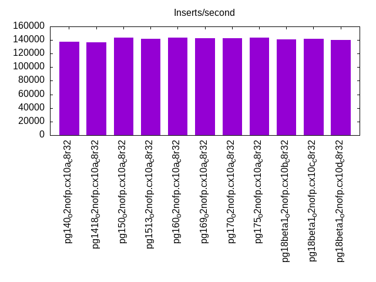
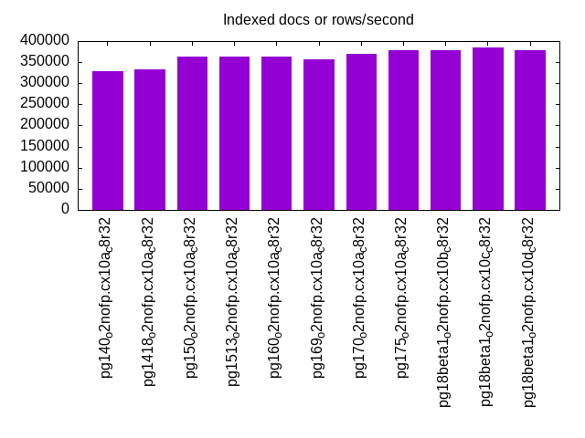
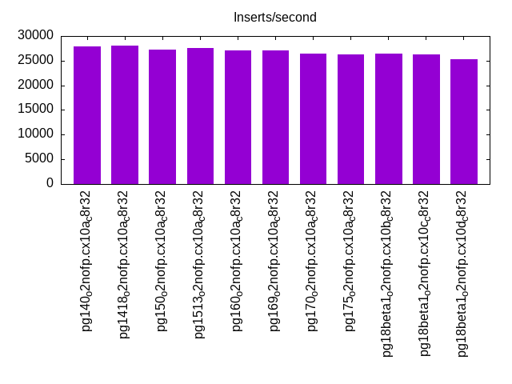
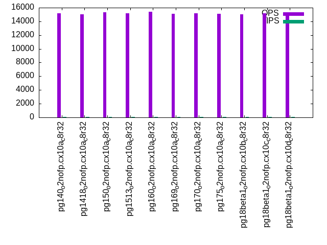
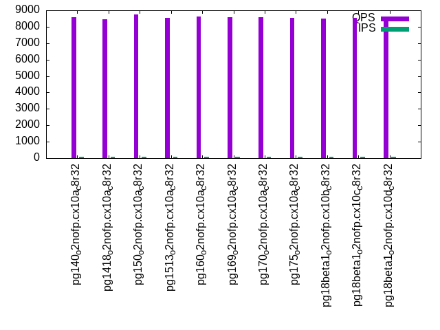
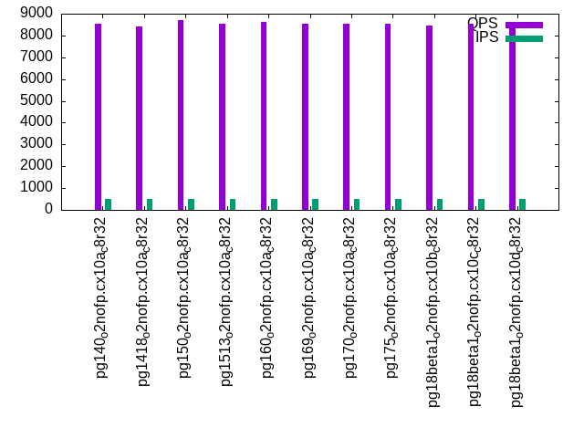
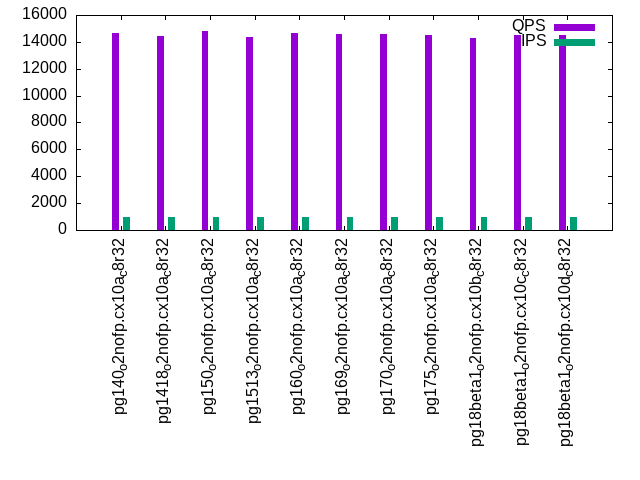
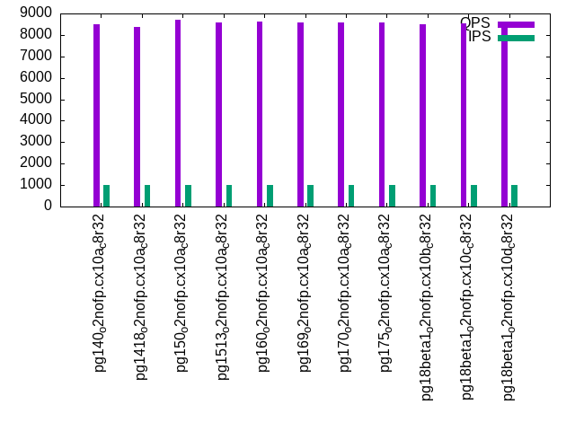

Introduction
This is a report for the insert benchmark with 20M docs and 1 client(s). It is generated by scripts (bash, awk, sed) and Tufte might not be impressed. An overview of the insert benchmark is here and a short update is here. Below, by DBMS, I mean DBMS+version.config. An example is my8020.c10b40 where my means MySQL, 8020 is version 8.0.20 and c10b40 is the name for the configuration file.
The test server has 8 AMD cores, 32G RAM and an NVMe SSD. It is described here as the PN53. The benchmark was run with 1 client and there were 1 or 3 connections per client (1 for queries or inserts without rate limits, 1+1 for rate limited inserts+deletes). It uses 1 table. It loads 20M rows per table without secondary indexes, creates 3 secondary indexes per table, then inserts 40m+10m rows per table with a delete per insert to avoid growing the table. It then does 6 read+write tests for 1800s each that do queries as fast as possible with 100,100,500,500,1000,1000 inserts/s and the same for deletes/s per client concurrent with the queries. The database is cached by Postgres. Clients and the DBMS share one server. The per-database configs are in the per-database subdirectories here.
The tested DBMS are:
- pg140_o2nofp.cx10a_c8r32 - Postgres 14.0 with the cx10a_c8r32 config
- pg1418_o2nofp.cx10a_c8r32 - Postgres 14.18 with the cx10a_c8r32 config
- pg150_o2nofp.cx10a_c8r32 - Postgres 15.0 with the cx10a_c8r32 config
- pg1513_o2nofp.cx10a_c8r32 - Postgres 15.13 with the cx10a_c8r32 config
- pg160_o2nofp.cx10a_c8r32 - Postgres 16.0 with the cx10a_c8r32 config
- pg169_o2nofp.cx10a_c8r32 - Postgres 16.9 with the cx10a_c8r32 config
- pg170_o2nofp.cx10a_c8r32 - Postgres 17.0 with the cx10a_c8r32 config
- pg175_o2nofp.cx10a_c8r32 - Postgres 17.5 with the cx10a_c8r32 config
- pg18beta1_o2nofp.cx10b_c8r32 - Postgres 18 beta1 with the cx10b_c8r32 config that uses io_method=sync
Contents
- Summary
- l.i0: load without secondary indexes
- l.x: create secondary indexes
- l.i1: continue load after secondary indexes created with 50 inserts per transaction
- l.i2: continue load after secondary indexes created with 5 inserts per transaction
- qr100.L1: range queries with 100 insert/s per client
- qp100.L2: point queries with 100 insert/s per client
- qr500.L3: range queries with 500 insert/s per client
- qp500.L4: point queries with 500 insert/s per client
- qr1000.L5: range queries with 1000 insert/s per client
- qp1000.L6: point queries with 1000 insert/s per client
Summary
The numbers are inserts/s for l.i0, l.i1 and l.i2, indexed docs (or rows) /s for l.x and queries/s for qr100, qp100 thru qr1000, qp1000" The values are the average rate over the entire test for inserts (IPS) and queries (QPS). The range of values for IPS and QPS is split into 3 parts: bottom 25%, middle 50%, top 25%. Values in the bottom 25% have a red background, values in the top 25% have a green background and values in the middle have no color. A gray background is used for values that can be ignored because the DBMS did not sustain the target insert rate. Red backgrounds are not used when the minimum value is within 80% of the max value.
| dbms | l.i0 | l.x | l.i1 | l.i2 | qr100 | qp100 | qr500 | qp500 | qr1000 | qp1000 |
|---|---|---|---|---|---|---|---|---|---|---|
| pg140_o2nofp.cx10a_c8r32 | 137931 | 327870 | 27972 | 3693 | 15216 | 8571 | 14669 | 8548 | 14686 | 8514 |
| pg1418_o2nofp.cx10a_c8r32 | 136986 | 333335 | 28011 | 3708 | 15005 | 8464 | 14498 | 8403 | 14461 | 8393 |
| pg150_o2nofp.cx10a_c8r32 | 143885 | 363638 | 27174 | 3700 | 15334 | 8731 | 14739 | 8723 | 14810 | 8693 |
| pg1513_o2nofp.cx10a_c8r32 | 141844 | 363638 | 27491 | 3602 | 15167 | 8537 | 14451 | 8557 | 14353 | 8581 |
| pg160_o2nofp.cx10a_c8r32 | 143885 | 363638 | 27027 | 3571 | 15398 | 8640 | 14727 | 8606 | 14693 | 8625 |
| pg169_o2nofp.cx10a_c8r32 | 142857 | 357145 | 27027 | 3684 | 15140 | 8587 | 14616 | 8538 | 14599 | 8583 |
| pg170_o2nofp.cx10a_c8r32 | 142857 | 370372 | 26472 | 3487 | 15180 | 8564 | 14602 | 8529 | 14582 | 8575 |
| pg175_o2nofp.cx10a_c8r32 | 143885 | 377360 | 26230 | 3512 | 15099 | 8524 | 14502 | 8534 | 14506 | 8576 |
| pg18beta1_o2nofp.cx10b_c8r32 | 140845 | 377360 | 26420 | 3309 | 15000 | 8486 | 14315 | 8465 | 14313 | 8492 |
| pg18beta1_o2nofp.cx10c_c8r32 | 141844 | 384617 | 26333 | 3565 | 15159 | 8531 | 14610 | 8524 | 14499 | 8534 |
| pg18beta1_o2nofp.cx10d_c8r32 | 139860 | 377360 | 25284 | 3221 | 15091 | 8496 | 14524 | 8513 | 14478 | 8438 |
This table has relative throughput, throughput for the DBMS relative to the DBMS in the first line, using the absolute throughput from the previous table. Values less than 0.95 have a yellow background. Values greater than 1.05 have a blue background.
| dbms | l.i0 | l.x | l.i1 | l.i2 | qr100 | qp100 | qr500 | qp500 | qr1000 | qp1000 |
|---|---|---|---|---|---|---|---|---|---|---|
| pg140_o2nofp.cx10a_c8r32 | 1.00 | 1.00 | 1.00 | 1.00 | 1.00 | 1.00 | 1.00 | 1.00 | 1.00 | 1.00 |
| pg1418_o2nofp.cx10a_c8r32 | 0.99 | 1.02 | 1.00 | 1.00 | 0.99 | 0.99 | 0.99 | 0.98 | 0.98 | 0.99 |
| pg150_o2nofp.cx10a_c8r32 | 1.04 | 1.11 | 0.97 | 1.00 | 1.01 | 1.02 | 1.00 | 1.02 | 1.01 | 1.02 |
| pg1513_o2nofp.cx10a_c8r32 | 1.03 | 1.11 | 0.98 | 0.98 | 1.00 | 1.00 | 0.99 | 1.00 | 0.98 | 1.01 |
| pg160_o2nofp.cx10a_c8r32 | 1.04 | 1.11 | 0.97 | 0.97 | 1.01 | 1.01 | 1.00 | 1.01 | 1.00 | 1.01 |
| pg169_o2nofp.cx10a_c8r32 | 1.04 | 1.09 | 0.97 | 1.00 | 1.00 | 1.00 | 1.00 | 1.00 | 0.99 | 1.01 |
| pg170_o2nofp.cx10a_c8r32 | 1.04 | 1.13 | 0.95 | 0.94 | 1.00 | 1.00 | 1.00 | 1.00 | 0.99 | 1.01 |
| pg175_o2nofp.cx10a_c8r32 | 1.04 | 1.15 | 0.94 | 0.95 | 0.99 | 0.99 | 0.99 | 1.00 | 0.99 | 1.01 |
| pg18beta1_o2nofp.cx10b_c8r32 | 1.02 | 1.15 | 0.94 | 0.90 | 0.99 | 0.99 | 0.98 | 0.99 | 0.97 | 1.00 |
| pg18beta1_o2nofp.cx10c_c8r32 | 1.03 | 1.17 | 0.94 | 0.97 | 1.00 | 1.00 | 1.00 | 1.00 | 0.99 | 1.00 |
| pg18beta1_o2nofp.cx10d_c8r32 | 1.01 | 1.15 | 0.90 | 0.87 | 0.99 | 0.99 | 0.99 | 1.00 | 0.99 | 0.99 |
This lists the average rate of inserts/s for the tests that do inserts concurrent with queries. For such tests the query rate is listed in the table above. The read+write tests are setup so that the insert rate should match the target rate every second. Cells that are not at least 95% of the target have a red background to indicate a failure to satisfy the target.
| dbms | qr100.L1 | qp100.L2 | qr500.L3 | qp500.L4 | qr1000.L5 | qp1000.L6 |
|---|---|---|---|---|---|---|
| pg140_o2nofp.cx10a_c8r32 | 100 | 100 | 500 | 500 | 1000 | 1000 |
| pg1418_o2nofp.cx10a_c8r32 | 100 | 100 | 500 | 500 | 999 | 999 |
| pg150_o2nofp.cx10a_c8r32 | 100 | 100 | 500 | 500 | 1000 | 1000 |
| pg1513_o2nofp.cx10a_c8r32 | 100 | 100 | 500 | 500 | 1000 | 1000 |
| pg160_o2nofp.cx10a_c8r32 | 100 | 100 | 500 | 500 | 1000 | 1000 |
| pg169_o2nofp.cx10a_c8r32 | 100 | 100 | 500 | 500 | 999 | 999 |
| pg170_o2nofp.cx10a_c8r32 | 100 | 100 | 500 | 500 | 999 | 999 |
| pg175_o2nofp.cx10a_c8r32 | 100 | 100 | 500 | 500 | 1000 | 1000 |
| pg18beta1_o2nofp.cx10b_c8r32 | 100 | 100 | 500 | 500 | 1000 | 1000 |
| pg18beta1_o2nofp.cx10c_c8r32 | 100 | 100 | 500 | 500 | 1000 | 1000 |
| pg18beta1_o2nofp.cx10d_c8r32 | 100 | 100 | 500 | 500 | 1000 | 1000 |
| target | 100 | 100 | 500 | 500 | 1000 | 1000 |
l.i0
l.i0: load without secondary indexes. Graphs for performance per 1-second interval are here.
Average throughput:
Insert response time histogram: each cell has the percentage of responses that take <= the time in the header and max is the max response time in seconds. For the max column values in the top 25% of the range have a red background and in the bottom 25% of the range have a green background. The red background is not used when the min value is within 80% of the max value.
| dbms | 256us | 1ms | 4ms | 16ms | 64ms | 256ms | 1s | 4s | 16s | gt | max |
|---|---|---|---|---|---|---|---|---|---|---|---|
| pg140_o2nofp.cx10a_c8r32 | 99.983 | 0.016 | 0.001 | 0.006 | |||||||
| pg1418_o2nofp.cx10a_c8r32 | 99.981 | 0.018 | 0.001 | 0.006 | |||||||
| pg150_o2nofp.cx10a_c8r32 | 99.986 | 0.014 | 0.004 | ||||||||
| pg1513_o2nofp.cx10a_c8r32 | 99.987 | 0.013 | 0.002 | ||||||||
| pg160_o2nofp.cx10a_c8r32 | 99.987 | 0.013 | 0.002 | ||||||||
| pg169_o2nofp.cx10a_c8r32 | 99.987 | 0.013 | 0.002 | ||||||||
| pg170_o2nofp.cx10a_c8r32 | 99.988 | 0.012 | 0.002 | ||||||||
| pg175_o2nofp.cx10a_c8r32 | 99.992 | 0.007 | 0.002 | ||||||||
| pg18beta1_o2nofp.cx10b_c8r32 | 99.993 | 0.007 | 0.002 | ||||||||
| pg18beta1_o2nofp.cx10c_c8r32 | 99.991 | 0.009 | 0.002 | ||||||||
| pg18beta1_o2nofp.cx10d_c8r32 | 99.981 | 0.019 | 0.003 |
Performance metrics for the DBMS listed above. Some are normalized by throughput, others are not. Legend for results is here.
ips qps rps rmbps wps wmbps rpq rkbpq wpi wkbpi csps cpups cspq cpupq dbgb1 dbgb2 rss maxop p50 p99 tag 137931 0 0 0.0 512.9 58.0 0.000 0.000 0.004 0.431 16683 19.4 0.121 11 1.9 5.2 2.0 0.006 138575 131478 pg140_o2nofp.cx10a_c8r32 136986 0 0 0.0 512.1 57.9 0.000 0.000 0.004 0.433 16515 19.4 0.121 11 1.9 5.2 1.2 0.006 137482 131586 pg1418_o2nofp.cx10a_c8r32 143885 0 0 0.0 541.9 61.5 0.000 0.000 0.004 0.438 17227 19.8 0.120 11 1.9 5.2 1.7 0.004 144674 137586 pg150_o2nofp.cx10a_c8r32 141844 0 0 0.0 532.8 60.5 0.000 0.000 0.004 0.436 17084 19.8 0.120 11 1.9 5.2 1.2 0.002 143683 137486 pg1513_o2nofp.cx10a_c8r32 143885 0 0 0.0 542.1 61.5 0.000 0.000 0.004 0.438 17156 19.9 0.119 11 1.9 5.2 0.4 0.002 144884 137287 pg160_o2nofp.cx10a_c8r32 142857 0 0 0.0 541.8 61.5 0.000 0.000 0.004 0.441 17098 19.7 0.120 11 1.9 5.2 1.7 0.002 144783 137985 pg169_o2nofp.cx10a_c8r32 142857 0 0 0.0 532.2 60.4 0.000 0.000 0.004 0.433 14635 19.8 0.102 11 1.9 5.2 1.7 0.002 143781 136986 pg170_o2nofp.cx10a_c8r32 143885 0 0 0.0 538.9 61.1 0.000 0.000 0.004 0.435 14748 20.0 0.103 11 1.9 5.2 1.7 0.002 144680 137678 pg175_o2nofp.cx10a_c8r32 140845 0 0 0.0 528.8 60.0 0.000 0.000 0.004 0.436 14502 19.8 0.103 11 1.9 5.2 1.6 0.002 142080 135378 pg18beta1_o2nofp.cx10b_c8r32 141844 0 0 0.0 532.0 60.3 0.000 0.000 0.004 0.436 14552 20.0 0.103 11 1.9 5.2 1.7 0.002 142781 135988 pg18beta1_o2nofp.cx10c_c8r32 139860 0 0 0.0 527.5 59.8 0.000 0.000 0.004 0.438 14392 19.7 0.103 11 1.9 5.2 1.6 0.003 142081 133485 pg18beta1_o2nofp.cx10d_c8r32
l.x
l.x: create secondary indexes.
Average throughput:
Performance metrics for the DBMS listed above. Some are normalized by throughput, others are not. Legend for results is here.
ips qps rps rmbps wps wmbps rpq rkbpq wpi wkbpi csps cpups cspq cpupq dbgb1 dbgb2 rss maxop p50 p99 tag 327870 0 0 0.0 663.4 81.1 0.000 0.000 0.002 0.253 1968 11.5 0.006 3 3.9 8.9 2.1 0.002 NA NA pg140_o2nofp.cx10a_c8r32 333335 0 0 0.0 675.3 82.5 0.000 0.000 0.002 0.254 2072 11.5 0.006 3 3.9 8.9 2.1 0.002 NA NA pg1418_o2nofp.cx10a_c8r32 363638 0 0 0.0 719.7 88.3 0.000 0.000 0.002 0.249 2173 11.4 0.006 3 3.9 8.9 2.1 0.002 NA NA pg150_o2nofp.cx10a_c8r32 363638 0 0 0.0 611.8 75.2 0.000 0.000 0.002 0.212 1673 11.5 0.005 3 3.8 8.9 2.1 0.002 NA NA pg1513_o2nofp.cx10a_c8r32 363638 0 0 0.0 846.6 104.1 0.000 0.000 0.002 0.293 2240 11.3 0.006 2 3.9 8.9 2.1 0.002 NA NA pg160_o2nofp.cx10a_c8r32 357145 0 0 0.0 726.4 89.1 0.000 0.000 0.002 0.255 2204 11.3 0.006 3 3.9 8.9 2.1 0.002 NA NA pg169_o2nofp.cx10a_c8r32 370372 0 0 0.0 557.1 68.2 0.000 0.000 0.002 0.189 1745 11.2 0.005 2 3.9 8.9 2.1 0.002 NA NA pg170_o2nofp.cx10a_c8r32 377360 0 0 0.0 580.2 71.0 0.000 0.000 0.002 0.193 1841 11.5 0.005 2 3.9 8.9 2.1 0.002 NA NA pg175_o2nofp.cx10a_c8r32 377360 0 0 0.0 607.8 74.3 0.000 0.000 0.002 0.202 1916 11.5 0.005 2 3.9 8.9 2.1 0.002 NA NA pg18beta1_o2nofp.cx10b_c8r32 384617 0 0 0.0 606.1 74.2 0.000 0.000 0.002 0.197 1947 11.5 0.005 2 3.9 8.9 2.1 0.002 NA NA pg18beta1_o2nofp.cx10c_c8r32 377360 0 0 0.0 603.1 73.8 0.000 0.000 0.002 0.200 1958 11.4 0.005 2 3.9 8.9 2.1 0.002 NA NA pg18beta1_o2nofp.cx10d_c8r32
l.i1
l.i1: continue load after secondary indexes created with 50 inserts per transaction. Graphs for performance per 1-second interval are here.
Average throughput:
Insert response time histogram: each cell has the percentage of responses that take <= the time in the header and max is the max response time in seconds. For the max column values in the top 25% of the range have a red background and in the bottom 25% of the range have a green background. The red background is not used when the min value is within 80% of the max value.
| dbms | 256us | 1ms | 4ms | 16ms | 64ms | 256ms | 1s | 4s | 16s | gt | max |
|---|---|---|---|---|---|---|---|---|---|---|---|
| pg140_o2nofp.cx10a_c8r32 | 66.457 | 33.532 | 0.002 | 0.009 | 0.050 | ||||||
| pg1418_o2nofp.cx10a_c8r32 | 63.743 | 36.246 | 0.003 | 0.008 | 0.059 | ||||||
| pg150_o2nofp.cx10a_c8r32 | 58.452 | 41.544 | 0.003 | nonzero | 0.024 | ||||||
| pg1513_o2nofp.cx10a_c8r32 | 57.586 | 42.412 | 0.001 | nonzero | 0.029 | ||||||
| pg160_o2nofp.cx10a_c8r32 | 56.427 | 43.569 | 0.003 | nonzero | 0.027 | ||||||
| pg169_o2nofp.cx10a_c8r32 | 55.342 | 44.653 | 0.004 | 0.001 | 0.024 | ||||||
| pg170_o2nofp.cx10a_c8r32 | 62.170 | 37.828 | 0.001 | 0.001 | 0.052 | ||||||
| pg175_o2nofp.cx10a_c8r32 | 61.381 | 38.616 | 0.002 | 0.001 | 0.037 | ||||||
| pg18beta1_o2nofp.cx10b_c8r32 | 62.640 | 37.357 | 0.002 | 0.001 | 0.033 | ||||||
| pg18beta1_o2nofp.cx10c_c8r32 | 62.628 | 37.368 | 0.003 | 0.001 | 0.031 | ||||||
| pg18beta1_o2nofp.cx10d_c8r32 | 66.225 | 33.766 | 0.005 | 0.005 | 0.031 |
Delete response time histogram: each cell has the percentage of responses that take <= the time in the header and max is the max response time in seconds. For the max column values in the top 25% of the range have a red background and in the bottom 25% of the range have a green background. The red background is not used when the min value is within 80% of the max value.
| dbms | 256us | 1ms | 4ms | 16ms | 64ms | 256ms | 1s | 4s | 16s | gt | max |
|---|---|---|---|---|---|---|---|---|---|---|---|
| pg140_o2nofp.cx10a_c8r32 | 29.334 | 70.640 | 0.021 | 0.005 | 0.049 | ||||||
| pg1418_o2nofp.cx10a_c8r32 | 29.985 | 69.994 | 0.013 | 0.007 | 0.059 | ||||||
| pg150_o2nofp.cx10a_c8r32 | 29.553 | 70.430 | 0.016 | 0.001 | 0.023 | ||||||
| pg1513_o2nofp.cx10a_c8r32 | 29.776 | 70.131 | 0.093 | 0.001 | 0.040 | ||||||
| pg160_o2nofp.cx10a_c8r32 | 29.436 | 70.515 | 0.049 | nonzero | 0.026 | ||||||
| pg169_o2nofp.cx10a_c8r32 | 29.145 | 70.839 | 0.016 | 0.001 | 0.023 | ||||||
| pg170_o2nofp.cx10a_c8r32 | 27.639 | 72.136 | 0.225 | 0.001 | 0.051 | ||||||
| pg175_o2nofp.cx10a_c8r32 | 26.239 | 73.651 | 0.109 | 0.001 | 0.037 | ||||||
| pg18beta1_o2nofp.cx10b_c8r32 | 28.797 | 69.317 | 1.885 | 0.001 | 0.039 | ||||||
| pg18beta1_o2nofp.cx10c_c8r32 | 27.986 | 71.999 | 0.015 | 0.001 | 0.030 | ||||||
| pg18beta1_o2nofp.cx10d_c8r32 | 28.538 | 58.133 | 13.325 | 0.003 | 0.030 |
Performance metrics for the DBMS listed above. Some are normalized by throughput, others are not. Legend for results is here.
ips qps rps rmbps wps wmbps rpq rkbpq wpi wkbpi csps cpups cspq cpupq dbgb1 dbgb2 rss maxop p50 p99 tag 27972 0 0 0.0 309.5 33.3 0.000 0.000 0.011 1.220 13599 22.3 0.486 64 5.4 32.0 2.5 0.050 22147 15848 pg140_o2nofp.cx10a_c8r32 28011 0 0 0.0 312.0 33.6 0.000 0.000 0.011 1.229 13694 22.5 0.489 64 5.4 32.1 2.5 0.059 22297 15298 pg1418_o2nofp.cx10a_c8r32 27174 0 0 0.0 299.3 32.4 0.000 0.000 0.011 1.219 13787 22.1 0.507 65 5.4 32.0 4.3 0.024 21347 14998 pg150_o2nofp.cx10a_c8r32 27491 0 0 0.0 304.7 33.0 0.000 0.000 0.011 1.228 14001 22.2 0.509 65 5.4 32.1 3.6 0.029 21647 15148 pg1513_o2nofp.cx10a_c8r32 27027 0 0 0.0 297.0 32.1 0.000 0.000 0.011 1.217 13741 22.0 0.508 65 5.4 32.0 4.6 0.027 21247 14198 pg160_o2nofp.cx10a_c8r32 27027 0 0 0.0 297.6 32.2 0.000 0.000 0.011 1.219 13724 22.1 0.508 65 5.4 32.1 4.8 0.024 20947 14698 pg169_o2nofp.cx10a_c8r32 26472 0 0 0.0 295.6 32.5 0.000 0.000 0.011 1.259 11104 21.9 0.419 66 5.4 32.1 1.3 0.052 20298 13148 pg170_o2nofp.cx10a_c8r32 26230 0 0 0.0 292.2 32.2 0.000 0.000 0.011 1.257 11005 21.9 0.420 67 5.3 32.1 2.4 0.037 20547 13448 pg175_o2nofp.cx10a_c8r32 26420 0 0 0.0 297.1 32.8 0.000 0.000 0.011 1.273 11108 21.9 0.420 66 5.3 32.0 1.5 0.033 20347 10599 pg18beta1_o2nofp.cx10b_c8r32 26333 0 0 0.0 295.7 32.7 0.000 0.000 0.011 1.272 11174 21.9 0.424 67 5.4 32.0 1.5 0.031 20198 14098 pg18beta1_o2nofp.cx10c_c8r32 25284 0 0 0.0 284.7 31.6 0.000 0.000 0.011 1.279 10680 21.7 0.422 69 5.4 32.1 4.5 0.031 18598 9849 pg18beta1_o2nofp.cx10d_c8r32
l.i2
l.i2: continue load after secondary indexes created with 5 inserts per transaction. Graphs for performance per 1-second interval are here.
Average throughput:

Insert response time histogram: each cell has the percentage of responses that take <= the time in the header and max is the max response time in seconds. For the max column values in the top 25% of the range have a red background and in the bottom 25% of the range have a green background. The red background is not used when the min value is within 80% of the max value.
| dbms | 256us | 1ms | 4ms | 16ms | 64ms | 256ms | 1s | 4s | 16s | gt | max |
|---|---|---|---|---|---|---|---|---|---|---|---|
| pg140_o2nofp.cx10a_c8r32 | 73.028 | 26.972 | nonzero | nonzero | nonzero | 0.038 | |||||
| pg1418_o2nofp.cx10a_c8r32 | 73.926 | 26.074 | nonzero | nonzero | nonzero | 0.033 | |||||
| pg150_o2nofp.cx10a_c8r32 | 73.747 | 26.253 | nonzero | nonzero | nonzero | 0.028 | |||||
| pg1513_o2nofp.cx10a_c8r32 | 69.934 | 30.066 | nonzero | nonzero | nonzero | 0.028 | |||||
| pg160_o2nofp.cx10a_c8r32 | 69.276 | 30.724 | nonzero | nonzero | nonzero | 0.025 | |||||
| pg169_o2nofp.cx10a_c8r32 | 73.382 | 26.617 | nonzero | nonzero | nonzero | 0.051 | |||||
| pg170_o2nofp.cx10a_c8r32 | 67.938 | 32.061 | nonzero | nonzero | 0.011 | ||||||
| pg175_o2nofp.cx10a_c8r32 | 69.393 | 30.607 | nonzero | nonzero | nonzero | 0.036 | |||||
| pg18beta1_o2nofp.cx10b_c8r32 | 63.897 | 36.103 | nonzero | nonzero | nonzero | 0.021 | |||||
| pg18beta1_o2nofp.cx10c_c8r32 | 70.842 | 29.158 | nonzero | nonzero | nonzero | 0.017 | |||||
| pg18beta1_o2nofp.cx10d_c8r32 | 68.943 | 31.056 | nonzero | nonzero | 0.006 |
Delete response time histogram: each cell has the percentage of responses that take <= the time in the header and max is the max response time in seconds. For the max column values in the top 25% of the range have a red background and in the bottom 25% of the range have a green background. The red background is not used when the min value is within 80% of the max value.
| dbms | 256us | 1ms | 4ms | 16ms | 64ms | 256ms | 1s | 4s | 16s | gt | max |
|---|---|---|---|---|---|---|---|---|---|---|---|
| pg140_o2nofp.cx10a_c8r32 | 1.428 | 38.264 | 60.306 | 0.002 | nonzero | 0.039 | |||||
| pg1418_o2nofp.cx10a_c8r32 | 1.655 | 34.062 | 64.282 | 0.002 | nonzero | 0.033 | |||||
| pg150_o2nofp.cx10a_c8r32 | 1.567 | 31.687 | 66.744 | 0.002 | nonzero | 0.028 | |||||
| pg1513_o2nofp.cx10a_c8r32 | 1.382 | 40.610 | 58.006 | 0.002 | nonzero | 0.029 | |||||
| pg160_o2nofp.cx10a_c8r32 | 1.469 | 33.722 | 64.807 | 0.002 | nonzero | 0.025 | |||||
| pg169_o2nofp.cx10a_c8r32 | 1.302 | 27.643 | 71.053 | 0.002 | nonzero | 0.051 | |||||
| pg170_o2nofp.cx10a_c8r32 | 1.455 | 38.878 | 59.667 | nonzero | 0.009 | ||||||
| pg175_o2nofp.cx10a_c8r32 | 1.436 | 38.093 | 60.470 | nonzero | nonzero | 0.036 | |||||
| pg18beta1_o2nofp.cx10b_c8r32 | 1.300 | 38.653 | 59.253 | 0.794 | 0.006 | ||||||
| pg18beta1_o2nofp.cx10c_c8r32 | 1.506 | 39.275 | 59.219 | nonzero | nonzero | 0.017 | |||||
| pg18beta1_o2nofp.cx10d_c8r32 | 1.020 | 40.682 | 56.109 | 2.189 | 0.010 |
Performance metrics for the DBMS listed above. Some are normalized by throughput, others are not. Legend for results is here.
ips qps rps rmbps wps wmbps rpq rkbpq wpi wkbpi csps cpups cspq cpupq dbgb1 dbgb2 rss maxop p50 p99 tag 3693 0 0 0.0 65.2 6.3 0.000 0.000 0.018 1.753 17198 15.9 4.657 344 5.4 35.2 0.1 0.038 2755 1905 pg140_o2nofp.cx10a_c8r32 3708 0 0 0.0 65.2 6.3 0.000 0.000 0.018 1.748 17234 15.9 4.648 343 5.4 35.3 0.1 0.033 2830 1745 pg1418_o2nofp.cx10a_c8r32 3700 0 0 0.0 63.0 6.3 0.000 0.000 0.017 1.747 17175 15.9 4.642 344 5.4 35.2 0.3 0.028 2865 1905 pg150_o2nofp.cx10a_c8r32 3602 0 0 0.0 61.6 6.1 0.000 0.000 0.017 1.748 16731 15.8 4.645 351 5.4 35.3 0.1 0.028 2600 1840 pg1513_o2nofp.cx10a_c8r32 3571 0 0 0.0 61.5 6.1 0.000 0.000 0.017 1.755 16554 15.9 4.635 356 5.4 35.1 0.2 0.025 2705 1820 pg160_o2nofp.cx10a_c8r32 3684 0 0 0.0 63.4 6.3 0.000 0.000 0.017 1.762 17148 15.9 4.654 345 5.5 35.3 3.1 0.051 2950 1955 pg169_o2nofp.cx10a_c8r32 3487 0 0 0.0 59.2 6.0 0.000 0.000 0.017 1.757 13605 15.7 3.902 360 5.4 35.1 0.3 0.011 2525 1750 pg170_o2nofp.cx10a_c8r32 3512 0 0 0.0 59.7 6.0 0.000 0.000 0.017 1.758 13692 15.7 3.898 358 5.4 35.2 0.3 0.036 2595 1720 pg175_o2nofp.cx10a_c8r32 3309 0 0 0.0 56.1 5.6 0.000 0.000 0.017 1.743 12952 15.7 3.914 380 5.4 34.8 0.3 0.021 2320 1175 pg18beta1_o2nofp.cx10b_c8r32 3565 0 0 0.0 60.3 6.1 0.000 0.000 0.017 1.759 13897 15.7 3.898 352 5.4 35.1 1.5 0.017 2590 1865 pg18beta1_o2nofp.cx10c_c8r32 3221 0 0 0.0 56.0 5.5 0.000 0.000 0.017 1.760 12590 15.4 3.909 383 5.4 34.7 5.2 0.006 2205 1165 pg18beta1_o2nofp.cx10d_c8r32
qr100.L1
qr100.L1: range queries with 100 insert/s per client. Graphs for performance per 1-second interval are here.
Average throughput:
Query response time histogram: each cell has the percentage of responses that take <= the time in the header and max is the max response time in seconds. For max values in the top 25% of the range have a red background and in the bottom 25% of the range have a green background. The red background is not used when the min value is within 80% of the max value.
| dbms | 256us | 1ms | 4ms | 16ms | 64ms | 256ms | 1s | 4s | 16s | gt | max |
|---|---|---|---|---|---|---|---|---|---|---|---|
| pg140_o2nofp.cx10a_c8r32 | 100.000 | nonzero | nonzero | 0.010 | |||||||
| pg1418_o2nofp.cx10a_c8r32 | 100.000 | nonzero | nonzero | nonzero | 0.010 | ||||||
| pg150_o2nofp.cx10a_c8r32 | 100.000 | nonzero | nonzero | 0.001 | |||||||
| pg1513_o2nofp.cx10a_c8r32 | 100.000 | nonzero | 0.001 | ||||||||
| pg160_o2nofp.cx10a_c8r32 | 100.000 | nonzero | nonzero | 0.001 | |||||||
| pg169_o2nofp.cx10a_c8r32 | 100.000 | nonzero | nonzero | 0.001 | |||||||
| pg170_o2nofp.cx10a_c8r32 | 100.000 | nonzero | 0.001 | ||||||||
| pg175_o2nofp.cx10a_c8r32 | 100.000 | nonzero | 0.001 | ||||||||
| pg18beta1_o2nofp.cx10b_c8r32 | 100.000 | nonzero | 0.001 | ||||||||
| pg18beta1_o2nofp.cx10c_c8r32 | 100.000 | nonzero | nonzero | 0.001 | |||||||
| pg18beta1_o2nofp.cx10d_c8r32 | 100.000 | nonzero | 0.001 |
Insert response time histogram: each cell has the percentage of responses that take <= the time in the header and max is the max response time in seconds. For max values in the top 25% of the range have a red background and in the bottom 25% of the range have a green background. The red background is not used when the min value is within 80% of the max value.
| dbms | 256us | 1ms | 4ms | 16ms | 64ms | 256ms | 1s | 4s | 16s | gt | max |
|---|---|---|---|---|---|---|---|---|---|---|---|
| pg140_o2nofp.cx10a_c8r32 | 1.556 | 98.389 | 0.056 | 0.006 | |||||||
| pg1418_o2nofp.cx10a_c8r32 | 1.944 | 98.000 | 0.056 | 0.006 | |||||||
| pg150_o2nofp.cx10a_c8r32 | 5.000 | 94.944 | 0.056 | 0.006 | |||||||
| pg1513_o2nofp.cx10a_c8r32 | 3.333 | 96.639 | 0.028 | 0.006 | |||||||
| pg160_o2nofp.cx10a_c8r32 | 3.583 | 96.361 | 0.056 | 0.006 | |||||||
| pg169_o2nofp.cx10a_c8r32 | 5.194 | 94.778 | 0.028 | 0.006 | |||||||
| pg170_o2nofp.cx10a_c8r32 | 3.778 | 96.194 | 0.028 | 0.006 | |||||||
| pg175_o2nofp.cx10a_c8r32 | 1.278 | 98.667 | 0.056 | 0.005 | |||||||
| pg18beta1_o2nofp.cx10b_c8r32 | 4.389 | 95.583 | 0.028 | 0.006 | |||||||
| pg18beta1_o2nofp.cx10c_c8r32 | 4.444 | 95.500 | 0.056 | 0.006 | |||||||
| pg18beta1_o2nofp.cx10d_c8r32 | 1.028 | 98.917 | 0.056 | 0.006 |
Delete response time histogram: each cell has the percentage of responses that take <= the time in the header and max is the max response time in seconds. For max values in the top 25% of the range have a red background and in the bottom 25% of the range have a green background. The red background is not used when the min value is within 80% of the max value.
| dbms | 256us | 1ms | 4ms | 16ms | 64ms | 256ms | 1s | 4s | 16s | gt | max |
|---|---|---|---|---|---|---|---|---|---|---|---|
| pg140_o2nofp.cx10a_c8r32 | 51.833 | 48.167 | 0.002 | ||||||||
| pg1418_o2nofp.cx10a_c8r32 | 55.722 | 44.278 | 0.002 | ||||||||
| pg150_o2nofp.cx10a_c8r32 | 58.222 | 41.778 | 0.002 | ||||||||
| pg1513_o2nofp.cx10a_c8r32 | 55.167 | 44.833 | 0.002 | ||||||||
| pg160_o2nofp.cx10a_c8r32 | 58.556 | 41.444 | 0.002 | ||||||||
| pg169_o2nofp.cx10a_c8r32 | 58.250 | 41.750 | 0.002 | ||||||||
| pg170_o2nofp.cx10a_c8r32 | 55.778 | 44.222 | 0.002 | ||||||||
| pg175_o2nofp.cx10a_c8r32 | 52.472 | 47.528 | 0.002 | ||||||||
| pg18beta1_o2nofp.cx10b_c8r32 | 55.139 | 44.861 | 0.002 | ||||||||
| pg18beta1_o2nofp.cx10c_c8r32 | 50.139 | 49.861 | 0.002 | ||||||||
| pg18beta1_o2nofp.cx10d_c8r32 | 48.000 | 52.000 | 0.002 |
Performance metrics for the DBMS listed above. Some are normalized by throughput, others are not. Legend for results is here.
ips qps rps rmbps wps wmbps rpq rkbpq wpi wkbpi csps cpups cspq cpupq dbgb1 dbgb2 rss maxop p50 p99 tag 100 15216 0 0.0 13.4 0.6 0.000 0.000 0.134 6.434 58133 12.4 3.821 65 5.4 35.2 0.1 0.010 15214 15022 pg140_o2nofp.cx10a_c8r32 100 15005 0 0.0 13.5 0.6 0.000 0.000 0.135 6.458 57323 12.4 3.820 66 5.4 35.3 0.1 0.010 14990 14766 pg1418_o2nofp.cx10a_c8r32 100 15334 0 0.0 11.3 0.6 0.000 0.000 0.114 6.249 58582 12.4 3.821 65 5.4 35.2 0.1 0.001 15310 15102 pg150_o2nofp.cx10a_c8r32 100 15167 0 0.0 11.3 0.6 0.000 0.000 0.113 6.242 57927 12.4 3.819 65 5.4 35.3 0.1 0.001 15165 14958 pg1513_o2nofp.cx10a_c8r32 100 15398 0 0.0 11.3 0.6 0.000 0.000 0.113 6.241 58829 12.4 3.821 64 5.4 35.1 0.1 0.001 15421 15214 pg160_o2nofp.cx10a_c8r32 100 15140 0 0.0 11.3 0.6 0.000 0.000 0.113 6.223 57817 12.4 3.819 66 5.5 35.3 0.1 0.001 15134 14926 pg169_o2nofp.cx10a_c8r32 100 15180 0 0.0 10.4 0.6 0.000 0.000 0.104 6.246 57951 12.4 3.818 65 5.4 35.1 0.1 0.001 15198 14942 pg170_o2nofp.cx10a_c8r32 100 15099 0 0.0 10.4 0.6 0.000 0.000 0.104 6.259 57689 12.4 3.821 66 5.4 35.2 0.1 0.001 15102 14878 pg175_o2nofp.cx10a_c8r32 100 15000 0 0.0 10.5 0.6 0.000 0.000 0.105 6.262 57298 12.4 3.820 66 5.4 34.8 0.1 0.001 15006 14734 pg18beta1_o2nofp.cx10b_c8r32 100 15159 0 0.0 10.5 0.6 0.000 0.000 0.105 6.266 57904 12.4 3.820 65 5.4 35.1 0.1 0.001 15166 14958 pg18beta1_o2nofp.cx10c_c8r32 100 15091 0 0.0 10.5 0.6 0.000 0.000 0.105 6.265 57652 12.4 3.820 66 5.4 34.7 0.1 0.001 15102 14814 pg18beta1_o2nofp.cx10d_c8r32
qp100.L2
qp100.L2: point queries with 100 insert/s per client. Graphs for performance per 1-second interval are here.
Average throughput:
Query response time histogram: each cell has the percentage of responses that take <= the time in the header and max is the max response time in seconds. For max values in the top 25% of the range have a red background and in the bottom 25% of the range have a green background. The red background is not used when the min value is within 80% of the max value.
| dbms | 256us | 1ms | 4ms | 16ms | 64ms | 256ms | 1s | 4s | 16s | gt | max |
|---|---|---|---|---|---|---|---|---|---|---|---|
| pg140_o2nofp.cx10a_c8r32 | 99.993 | 0.007 | nonzero | nonzero | 0.010 | ||||||
| pg1418_o2nofp.cx10a_c8r32 | 99.992 | 0.008 | nonzero | 0.010 | |||||||
| pg150_o2nofp.cx10a_c8r32 | 99.994 | 0.006 | nonzero | 0.001 | |||||||
| pg1513_o2nofp.cx10a_c8r32 | 99.996 | 0.004 | 0.001 | ||||||||
| pg160_o2nofp.cx10a_c8r32 | 99.997 | 0.003 | 0.001 | ||||||||
| pg169_o2nofp.cx10a_c8r32 | 99.995 | 0.005 | nonzero | 0.002 | |||||||
| pg170_o2nofp.cx10a_c8r32 | 99.993 | 0.007 | nonzero | 0.001 | |||||||
| pg175_o2nofp.cx10a_c8r32 | 99.994 | 0.006 | 0.001 | ||||||||
| pg18beta1_o2nofp.cx10b_c8r32 | 99.995 | 0.005 | 0.001 | ||||||||
| pg18beta1_o2nofp.cx10c_c8r32 | 99.996 | 0.004 | 0.001 | ||||||||
| pg18beta1_o2nofp.cx10d_c8r32 | 99.993 | 0.007 | nonzero | 0.001 |
Insert response time histogram: each cell has the percentage of responses that take <= the time in the header and max is the max response time in seconds. For max values in the top 25% of the range have a red background and in the bottom 25% of the range have a green background. The red background is not used when the min value is within 80% of the max value.
| dbms | 256us | 1ms | 4ms | 16ms | 64ms | 256ms | 1s | 4s | 16s | gt | max |
|---|---|---|---|---|---|---|---|---|---|---|---|
| pg140_o2nofp.cx10a_c8r32 | 99.944 | 0.056 | 0.006 | ||||||||
| pg1418_o2nofp.cx10a_c8r32 | 99.944 | 0.056 | 0.005 | ||||||||
| pg150_o2nofp.cx10a_c8r32 | 99.944 | 0.056 | 0.009 | ||||||||
| pg1513_o2nofp.cx10a_c8r32 | 99.944 | 0.056 | 0.005 | ||||||||
| pg160_o2nofp.cx10a_c8r32 | 99.944 | 0.056 | 0.005 | ||||||||
| pg169_o2nofp.cx10a_c8r32 | 99.861 | 0.139 | 0.010 | ||||||||
| pg170_o2nofp.cx10a_c8r32 | 0.028 | 99.917 | 0.056 | 0.005 | |||||||
| pg175_o2nofp.cx10a_c8r32 | 99.750 | 0.250 | 0.010 | ||||||||
| pg18beta1_o2nofp.cx10b_c8r32 | 99.944 | 0.056 | 0.005 | ||||||||
| pg18beta1_o2nofp.cx10c_c8r32 | 99.972 | 0.028 | 0.006 | ||||||||
| pg18beta1_o2nofp.cx10d_c8r32 | 99.944 | 0.056 | 0.005 |
Delete response time histogram: each cell has the percentage of responses that take <= the time in the header and max is the max response time in seconds. For max values in the top 25% of the range have a red background and in the bottom 25% of the range have a green background. The red background is not used when the min value is within 80% of the max value.
| dbms | 256us | 1ms | 4ms | 16ms | 64ms | 256ms | 1s | 4s | 16s | gt | max |
|---|---|---|---|---|---|---|---|---|---|---|---|
| pg140_o2nofp.cx10a_c8r32 | 20.583 | 79.389 | 0.028 | 0.004 | |||||||
| pg1418_o2nofp.cx10a_c8r32 | 4.861 | 95.111 | 0.028 | 0.004 | |||||||
| pg150_o2nofp.cx10a_c8r32 | 14.611 | 85.361 | 0.028 | 0.004 | |||||||
| pg1513_o2nofp.cx10a_c8r32 | 14.778 | 85.194 | 0.028 | 0.004 | |||||||
| pg160_o2nofp.cx10a_c8r32 | 23.806 | 76.167 | 0.028 | 0.004 | |||||||
| pg169_o2nofp.cx10a_c8r32 | 30.056 | 69.889 | 0.056 | 0.010 | |||||||
| pg170_o2nofp.cx10a_c8r32 | 25.000 | 75.000 | 0.004 | ||||||||
| pg175_o2nofp.cx10a_c8r32 | 14.944 | 85.028 | 0.028 | 0.005 | |||||||
| pg18beta1_o2nofp.cx10b_c8r32 | 12.611 | 87.361 | 0.028 | 0.005 | |||||||
| pg18beta1_o2nofp.cx10c_c8r32 | 4.083 | 95.889 | 0.028 | 0.004 | |||||||
| pg18beta1_o2nofp.cx10d_c8r32 | 19.056 | 80.917 | 0.028 | 0.004 |
Performance metrics for the DBMS listed above. Some are normalized by throughput, others are not. Legend for results is here.
ips qps rps rmbps wps wmbps rpq rkbpq wpi wkbpi csps cpups cspq cpupq dbgb1 dbgb2 rss maxop p50 p99 tag 100 8571 0 0.0 42.8 1.4 0.000 0.000 0.428 14.322 33173 12.4 3.870 116 5.4 35.2 0.2 0.010 8575 8495 pg140_o2nofp.cx10a_c8r32 100 8464 0 0.0 42.8 1.4 0.000 0.000 0.428 14.341 32766 12.4 3.871 117 5.4 35.3 0.1 0.010 8463 8399 pg1418_o2nofp.cx10a_c8r32 100 8731 0 0.0 40.7 1.4 0.000 0.000 0.407 14.143 33766 12.4 3.867 114 5.4 35.2 0.1 0.001 8735 8671 pg150_o2nofp.cx10a_c8r32 100 8537 0 0.0 40.7 1.4 0.000 0.000 0.407 14.115 32999 12.4 3.865 116 5.4 35.3 0.1 0.001 8527 8495 pg1513_o2nofp.cx10a_c8r32 100 8640 0 0.0 40.6 1.4 0.000 0.000 0.407 14.123 33414 12.4 3.868 115 5.4 35.1 0.1 0.001 8639 8575 pg160_o2nofp.cx10a_c8r32 100 8587 0 0.0 40.7 1.4 0.000 0.000 0.407 14.135 33204 12.4 3.867 116 5.5 35.3 0.1 0.002 8591 8527 pg169_o2nofp.cx10a_c8r32 100 8564 0 0.0 39.4 1.4 0.000 0.000 0.394 14.107 33091 12.4 3.864 116 5.4 35.1 0.1 0.001 8559 8495 pg170_o2nofp.cx10a_c8r32 100 8524 0 0.0 39.3 1.4 0.000 0.000 0.393 14.169 32959 12.4 3.867 116 5.4 35.2 0.2 0.001 8527 8463 pg175_o2nofp.cx10a_c8r32 100 8486 0 0.0 39.2 1.4 0.000 0.000 0.392 14.103 32792 12.4 3.864 117 5.4 34.8 0.1 0.001 8495 8415 pg18beta1_o2nofp.cx10b_c8r32 100 8531 0 0.0 39.3 1.4 0.000 0.000 0.393 14.121 32983 12.4 3.866 116 5.4 35.1 0.1 0.001 8542 8463 pg18beta1_o2nofp.cx10c_c8r32 100 8496 0 0.0 39.3 1.4 0.000 0.000 0.393 14.122 32849 12.4 3.867 117 5.4 34.7 0.1 0.001 8495 8431 pg18beta1_o2nofp.cx10d_c8r32
qr500.L3
qr500.L3: range queries with 500 insert/s per client. Graphs for performance per 1-second interval are here.
Average throughput:
Query response time histogram: each cell has the percentage of responses that take <= the time in the header and max is the max response time in seconds. For max values in the top 25% of the range have a red background and in the bottom 25% of the range have a green background. The red background is not used when the min value is within 80% of the max value.
| dbms | 256us | 1ms | 4ms | 16ms | 64ms | 256ms | 1s | 4s | 16s | gt | max |
|---|---|---|---|---|---|---|---|---|---|---|---|
| pg140_o2nofp.cx10a_c8r32 | 99.998 | 0.002 | nonzero | nonzero | 0.031 | ||||||
| pg1418_o2nofp.cx10a_c8r32 | 99.999 | 0.001 | nonzero | nonzero | 0.007 | ||||||
| pg150_o2nofp.cx10a_c8r32 | 99.999 | 0.001 | nonzero | 0.002 | |||||||
| pg1513_o2nofp.cx10a_c8r32 | 99.999 | 0.001 | nonzero | 0.002 | |||||||
| pg160_o2nofp.cx10a_c8r32 | 99.999 | 0.001 | nonzero | 0.002 | |||||||
| pg169_o2nofp.cx10a_c8r32 | 99.999 | 0.001 | nonzero | 0.002 | |||||||
| pg170_o2nofp.cx10a_c8r32 | 99.999 | 0.001 | nonzero | 0.002 | |||||||
| pg175_o2nofp.cx10a_c8r32 | 99.999 | 0.001 | nonzero | 0.002 | |||||||
| pg18beta1_o2nofp.cx10b_c8r32 | 99.999 | 0.001 | nonzero | 0.002 | |||||||
| pg18beta1_o2nofp.cx10c_c8r32 | 99.999 | 0.001 | nonzero | 0.003 | |||||||
| pg18beta1_o2nofp.cx10d_c8r32 | 99.999 | 0.001 | nonzero | nonzero | 0.008 |
Insert response time histogram: each cell has the percentage of responses that take <= the time in the header and max is the max response time in seconds. For max values in the top 25% of the range have a red background and in the bottom 25% of the range have a green background. The red background is not used when the min value is within 80% of the max value.
| dbms | 256us | 1ms | 4ms | 16ms | 64ms | 256ms | 1s | 4s | 16s | gt | max |
|---|---|---|---|---|---|---|---|---|---|---|---|
| pg140_o2nofp.cx10a_c8r32 | 46.067 | 53.833 | 0.094 | 0.006 | 0.036 | ||||||
| pg1418_o2nofp.cx10a_c8r32 | 44.494 | 55.478 | 0.028 | 0.009 | |||||||
| pg150_o2nofp.cx10a_c8r32 | 45.728 | 54.044 | 0.228 | 0.016 | |||||||
| pg1513_o2nofp.cx10a_c8r32 | 41.228 | 58.639 | 0.133 | 0.010 | |||||||
| pg160_o2nofp.cx10a_c8r32 | 41.422 | 58.439 | 0.139 | 0.010 | |||||||
| pg169_o2nofp.cx10a_c8r32 | 46.344 | 53.583 | 0.072 | 0.009 | |||||||
| pg170_o2nofp.cx10a_c8r32 | 49.667 | 50.194 | 0.139 | 0.011 | |||||||
| pg175_o2nofp.cx10a_c8r32 | 42.294 | 57.478 | 0.228 | 0.011 | |||||||
| pg18beta1_o2nofp.cx10b_c8r32 | 53.678 | 46.289 | 0.033 | 0.010 | |||||||
| pg18beta1_o2nofp.cx10c_c8r32 | 56.161 | 43.811 | 0.028 | 0.009 | |||||||
| pg18beta1_o2nofp.cx10d_c8r32 | 50.967 | 48.839 | 0.194 | 0.010 |
Delete response time histogram: each cell has the percentage of responses that take <= the time in the header and max is the max response time in seconds. For max values in the top 25% of the range have a red background and in the bottom 25% of the range have a green background. The red background is not used when the min value is within 80% of the max value.
| dbms | 256us | 1ms | 4ms | 16ms | 64ms | 256ms | 1s | 4s | 16s | gt | max |
|---|---|---|---|---|---|---|---|---|---|---|---|
| pg140_o2nofp.cx10a_c8r32 | 27.667 | 72.272 | 0.056 | 0.006 | 0.034 | ||||||
| pg1418_o2nofp.cx10a_c8r32 | 26.133 | 73.811 | 0.056 | 0.010 | |||||||
| pg150_o2nofp.cx10a_c8r32 | 23.061 | 76.833 | 0.100 | 0.006 | 0.026 | ||||||
| pg1513_o2nofp.cx10a_c8r32 | 25.339 | 74.594 | 0.067 | 0.010 | |||||||
| pg160_o2nofp.cx10a_c8r32 | 25.711 | 74.211 | 0.078 | 0.010 | |||||||
| pg169_o2nofp.cx10a_c8r32 | 26.167 | 73.744 | 0.089 | 0.010 | |||||||
| pg170_o2nofp.cx10a_c8r32 | 21.406 | 77.361 | 1.233 | 0.011 | |||||||
| pg175_o2nofp.cx10a_c8r32 | 21.400 | 77.417 | 1.183 | 0.012 | |||||||
| pg18beta1_o2nofp.cx10b_c8r32 | 21.939 | 77.272 | 0.789 | 0.013 | |||||||
| pg18beta1_o2nofp.cx10c_c8r32 | 24.533 | 74.967 | 0.500 | 0.006 | |||||||
| pg18beta1_o2nofp.cx10d_c8r32 | 22.956 | 76.617 | 0.428 | 0.011 |
Performance metrics for the DBMS listed above. Some are normalized by throughput, others are not. Legend for results is here.
ips qps rps rmbps wps wmbps rpq rkbpq wpi wkbpi csps cpups cspq cpupq dbgb1 dbgb2 rss maxop p50 p99 tag 500 14669 0 0.0 52.5 1.8 0.000 0.000 0.105 3.736 56209 13.0 3.832 71 5.4 35.2 0.3 0.031 14622 14046 pg140_o2nofp.cx10a_c8r32 500 14498 0 0.0 52.6 1.8 0.000 0.000 0.105 3.744 55560 13.1 3.832 72 5.4 35.3 0.3 0.007 14462 13902 pg1418_o2nofp.cx10a_c8r32 500 14739 0 0.0 50.4 1.8 0.000 0.000 0.101 3.742 56448 13.1 3.830 71 5.5 35.2 0.3 0.002 14685 14062 pg150_o2nofp.cx10a_c8r32 500 14451 0 0.0 50.2 1.8 0.000 0.000 0.100 3.713 55335 12.9 3.829 71 5.4 35.3 0.3 0.002 14414 13790 pg1513_o2nofp.cx10a_c8r32 500 14727 0 0.0 50.2 1.8 0.000 0.000 0.101 3.721 56425 13.0 3.831 71 5.4 35.1 2.7 0.002 14654 14078 pg160_o2nofp.cx10a_c8r32 500 14616 0 0.0 50.2 1.8 0.000 0.000 0.100 3.692 56002 13.0 3.831 71 5.5 35.3 2.7 0.002 14574 13950 pg169_o2nofp.cx10a_c8r32 500 14602 0 0.0 49.6 1.8 0.000 0.000 0.099 3.712 55882 13.0 3.827 71 5.4 35.2 0.3 0.002 14526 13854 pg170_o2nofp.cx10a_c8r32 500 14502 0 0.0 49.6 1.8 0.000 0.000 0.099 3.749 55534 13.0 3.829 72 5.5 35.2 0.3 0.002 14446 13806 pg175_o2nofp.cx10a_c8r32 500 14315 0 0.0 49.5 1.8 0.000 0.000 0.099 3.669 54784 12.9 3.827 72 5.4 34.8 0.3 0.002 14286 13582 pg18beta1_o2nofp.cx10b_c8r32 500 14610 0 0.0 49.5 1.8 0.000 0.000 0.099 3.680 55939 13.0 3.829 71 5.4 35.1 4.6 0.003 14558 13822 pg18beta1_o2nofp.cx10c_c8r32 500 14524 0 0.0 49.4 1.8 0.000 0.000 0.099 3.729 55585 12.9 3.827 71 5.5 34.8 0.3 0.008 14477 13758 pg18beta1_o2nofp.cx10d_c8r32
qp500.L4
qp500.L4: point queries with 500 insert/s per client. Graphs for performance per 1-second interval are here.
Average throughput:
Query response time histogram: each cell has the percentage of responses that take <= the time in the header and max is the max response time in seconds. For max values in the top 25% of the range have a red background and in the bottom 25% of the range have a green background. The red background is not used when the min value is within 80% of the max value.
| dbms | 256us | 1ms | 4ms | 16ms | 64ms | 256ms | 1s | 4s | 16s | gt | max |
|---|---|---|---|---|---|---|---|---|---|---|---|
| pg140_o2nofp.cx10a_c8r32 | 99.988 | 0.012 | nonzero | 0.002 | |||||||
| pg1418_o2nofp.cx10a_c8r32 | 99.987 | 0.013 | nonzero | 0.002 | |||||||
| pg150_o2nofp.cx10a_c8r32 | 99.990 | 0.010 | nonzero | 0.002 | |||||||
| pg1513_o2nofp.cx10a_c8r32 | 99.990 | 0.010 | nonzero | 0.002 | |||||||
| pg160_o2nofp.cx10a_c8r32 | 99.989 | 0.011 | nonzero | 0.002 | |||||||
| pg169_o2nofp.cx10a_c8r32 | 99.990 | 0.010 | nonzero | 0.002 | |||||||
| pg170_o2nofp.cx10a_c8r32 | 99.991 | 0.009 | nonzero | 0.002 | |||||||
| pg175_o2nofp.cx10a_c8r32 | 99.991 | 0.009 | nonzero | 0.002 | |||||||
| pg18beta1_o2nofp.cx10b_c8r32 | 99.991 | 0.009 | nonzero | nonzero | 0.022 | ||||||
| pg18beta1_o2nofp.cx10c_c8r32 | 99.990 | 0.010 | nonzero | 0.002 | |||||||
| pg18beta1_o2nofp.cx10d_c8r32 | 99.991 | 0.009 | nonzero | 0.002 |
Insert response time histogram: each cell has the percentage of responses that take <= the time in the header and max is the max response time in seconds. For max values in the top 25% of the range have a red background and in the bottom 25% of the range have a green background. The red background is not used when the min value is within 80% of the max value.
| dbms | 256us | 1ms | 4ms | 16ms | 64ms | 256ms | 1s | 4s | 16s | gt | max |
|---|---|---|---|---|---|---|---|---|---|---|---|
| pg140_o2nofp.cx10a_c8r32 | 26.672 | 73.306 | 0.022 | 0.008 | |||||||
| pg1418_o2nofp.cx10a_c8r32 | 26.133 | 73.778 | 0.089 | 0.011 | |||||||
| pg150_o2nofp.cx10a_c8r32 | 27.700 | 72.278 | 0.022 | 0.009 | |||||||
| pg1513_o2nofp.cx10a_c8r32 | 26.306 | 73.683 | 0.011 | 0.007 | |||||||
| pg160_o2nofp.cx10a_c8r32 | 26.067 | 73.867 | 0.067 | 0.010 | |||||||
| pg169_o2nofp.cx10a_c8r32 | 24.256 | 75.739 | 0.006 | 0.005 | |||||||
| pg170_o2nofp.cx10a_c8r32 | 30.206 | 69.689 | 0.106 | 0.010 | |||||||
| pg175_o2nofp.cx10a_c8r32 | 35.150 | 64.806 | 0.044 | 0.010 | |||||||
| pg18beta1_o2nofp.cx10b_c8r32 | 30.678 | 69.233 | 0.089 | 0.011 | |||||||
| pg18beta1_o2nofp.cx10c_c8r32 | 36.544 | 63.289 | 0.167 | 0.011 | |||||||
| pg18beta1_o2nofp.cx10d_c8r32 | 34.850 | 65.139 | 0.011 | 0.005 |
Delete response time histogram: each cell has the percentage of responses that take <= the time in the header and max is the max response time in seconds. For max values in the top 25% of the range have a red background and in the bottom 25% of the range have a green background. The red background is not used when the min value is within 80% of the max value.
| dbms | 256us | 1ms | 4ms | 16ms | 64ms | 256ms | 1s | 4s | 16s | gt | max |
|---|---|---|---|---|---|---|---|---|---|---|---|
| pg140_o2nofp.cx10a_c8r32 | 24.500 | 75.461 | 0.039 | 0.005 | |||||||
| pg1418_o2nofp.cx10a_c8r32 | 26.389 | 73.544 | 0.067 | 0.010 | |||||||
| pg150_o2nofp.cx10a_c8r32 | 18.550 | 80.861 | 0.589 | 0.007 | |||||||
| pg1513_o2nofp.cx10a_c8r32 | 20.933 | 79.022 | 0.044 | 0.005 | |||||||
| pg160_o2nofp.cx10a_c8r32 | 22.506 | 77.411 | 0.083 | 0.005 | |||||||
| pg169_o2nofp.cx10a_c8r32 | 24.861 | 75.067 | 0.072 | 0.005 | |||||||
| pg170_o2nofp.cx10a_c8r32 | 21.722 | 77.078 | 1.200 | 0.011 | |||||||
| pg175_o2nofp.cx10a_c8r32 | 20.233 | 78.811 | 0.956 | 0.005 | |||||||
| pg18beta1_o2nofp.cx10b_c8r32 | 21.061 | 78.272 | 0.667 | 0.011 | |||||||
| pg18beta1_o2nofp.cx10c_c8r32 | 20.750 | 78.694 | 0.556 | 0.011 | |||||||
| pg18beta1_o2nofp.cx10d_c8r32 | 17.978 | 81.661 | 0.361 | 0.006 |
Performance metrics for the DBMS listed above. Some are normalized by throughput, others are not. Legend for results is here.
ips qps rps rmbps wps wmbps rpq rkbpq wpi wkbpi csps cpups cspq cpupq dbgb1 dbgb2 rss maxop p50 p99 tag 500 8548 0 0.0 30.8 2.3 0.000 0.000 0.062 4.637 33208 12.5 3.885 117 5.4 34.0 0.3 0.002 8543 8479 pg140_o2nofp.cx10a_c8r32 500 8403 0 0.0 31.1 2.3 0.000 0.000 0.062 4.696 32660 12.5 3.887 119 5.5 34.1 0.3 0.002 8399 8335 pg1418_o2nofp.cx10a_c8r32 500 8723 0 0.0 28.7 2.2 0.000 0.000 0.057 4.579 33845 12.4 3.880 114 5.5 34.0 0.3 0.002 8719 8639 pg150_o2nofp.cx10a_c8r32 500 8557 0 0.0 28.7 2.2 0.000 0.000 0.057 4.582 33203 12.4 3.880 116 5.4 34.0 0.3 0.002 8559 8479 pg1513_o2nofp.cx10a_c8r32 500 8606 0 0.0 28.8 2.3 0.000 0.000 0.058 4.623 33392 12.4 3.880 115 5.5 34.0 4.6 0.002 8607 8542 pg160_o2nofp.cx10a_c8r32 500 8538 0 0.0 28.6 2.2 0.000 0.000 0.057 4.578 33152 12.5 3.883 117 5.5 34.1 2.8 0.002 8543 8463 pg169_o2nofp.cx10a_c8r32 500 8529 0 0.0 27.6 2.3 0.000 0.000 0.055 4.645 33092 12.5 3.880 117 5.5 34.1 0.3 0.002 8527 8463 pg170_o2nofp.cx10a_c8r32 500 8534 0 0.0 27.4 2.2 0.000 0.000 0.055 4.598 33103 12.5 3.879 117 5.5 34.0 0.3 0.002 8543 8463 pg175_o2nofp.cx10a_c8r32 500 8465 0 0.0 28.2 2.2 0.000 0.000 0.056 4.597 32828 12.4 3.878 117 5.4 34.0 0.3 0.022 8463 8383 pg18beta1_o2nofp.cx10b_c8r32 500 8524 0 0.0 28.4 2.3 0.000 0.000 0.057 4.639 33051 12.4 3.877 116 5.5 34.0 0.3 0.002 8526 8463 pg18beta1_o2nofp.cx10c_c8r32 500 8513 0 0.0 28.3 2.2 0.000 0.000 0.057 4.571 33002 12.4 3.877 117 5.5 34.1 0.3 0.002 8511 8431 pg18beta1_o2nofp.cx10d_c8r32
qr1000.L5
qr1000.L5: range queries with 1000 insert/s per client. Graphs for performance per 1-second interval are here.
Average throughput:
Query response time histogram: each cell has the percentage of responses that take <= the time in the header and max is the max response time in seconds. For max values in the top 25% of the range have a red background and in the bottom 25% of the range have a green background. The red background is not used when the min value is within 80% of the max value.
| dbms | 256us | 1ms | 4ms | 16ms | 64ms | 256ms | 1s | 4s | 16s | gt | max |
|---|---|---|---|---|---|---|---|---|---|---|---|
| pg140_o2nofp.cx10a_c8r32 | 99.999 | 0.001 | nonzero | 0.002 | |||||||
| pg1418_o2nofp.cx10a_c8r32 | 99.999 | 0.001 | nonzero | 0.002 | |||||||
| pg150_o2nofp.cx10a_c8r32 | 99.999 | 0.001 | nonzero | 0.002 | |||||||
| pg1513_o2nofp.cx10a_c8r32 | 99.999 | 0.001 | nonzero | 0.002 | |||||||
| pg160_o2nofp.cx10a_c8r32 | 99.999 | 0.001 | nonzero | 0.002 | |||||||
| pg169_o2nofp.cx10a_c8r32 | 99.999 | 0.001 | nonzero | 0.002 | |||||||
| pg170_o2nofp.cx10a_c8r32 | 99.999 | 0.001 | nonzero | 0.002 | |||||||
| pg175_o2nofp.cx10a_c8r32 | 99.999 | 0.001 | nonzero | 0.002 | |||||||
| pg18beta1_o2nofp.cx10b_c8r32 | 99.997 | 0.003 | nonzero | nonzero | 0.007 | ||||||
| pg18beta1_o2nofp.cx10c_c8r32 | 99.997 | 0.003 | nonzero | 0.003 | |||||||
| pg18beta1_o2nofp.cx10d_c8r32 | 99.997 | 0.003 | nonzero | 0.003 |
Insert response time histogram: each cell has the percentage of responses that take <= the time in the header and max is the max response time in seconds. For max values in the top 25% of the range have a red background and in the bottom 25% of the range have a green background. The red background is not used when the min value is within 80% of the max value.
| dbms | 256us | 1ms | 4ms | 16ms | 64ms | 256ms | 1s | 4s | 16s | gt | max |
|---|---|---|---|---|---|---|---|---|---|---|---|
| pg140_o2nofp.cx10a_c8r32 | 64.422 | 35.558 | 0.019 | 0.010 | |||||||
| pg1418_o2nofp.cx10a_c8r32 | 63.242 | 36.750 | 0.008 | 0.005 | |||||||
| pg150_o2nofp.cx10a_c8r32 | 62.014 | 37.975 | 0.011 | 0.010 | |||||||
| pg1513_o2nofp.cx10a_c8r32 | 56.847 | 43.131 | 0.022 | 0.010 | |||||||
| pg160_o2nofp.cx10a_c8r32 | 61.956 | 38.036 | 0.008 | 0.009 | |||||||
| pg169_o2nofp.cx10a_c8r32 | 65.069 | 34.922 | 0.008 | 0.007 | |||||||
| pg170_o2nofp.cx10a_c8r32 | 67.875 | 32.108 | 0.017 | 0.010 | |||||||
| pg175_o2nofp.cx10a_c8r32 | 66.511 | 33.478 | 0.011 | 0.010 | |||||||
| pg18beta1_o2nofp.cx10b_c8r32 | 69.519 | 30.456 | 0.025 | 0.010 | |||||||
| pg18beta1_o2nofp.cx10c_c8r32 | 70.344 | 29.647 | 0.008 | 0.009 | |||||||
| pg18beta1_o2nofp.cx10d_c8r32 | 69.528 | 30.469 | 0.003 | 0.005 |
Delete response time histogram: each cell has the percentage of responses that take <= the time in the header and max is the max response time in seconds. For max values in the top 25% of the range have a red background and in the bottom 25% of the range have a green background. The red background is not used when the min value is within 80% of the max value.
| dbms | 256us | 1ms | 4ms | 16ms | 64ms | 256ms | 1s | 4s | 16s | gt | max |
|---|---|---|---|---|---|---|---|---|---|---|---|
| pg140_o2nofp.cx10a_c8r32 | 26.133 | 73.822 | 0.044 | 0.007 | |||||||
| pg1418_o2nofp.cx10a_c8r32 | 24.208 | 75.783 | 0.008 | 0.004 | |||||||
| pg150_o2nofp.cx10a_c8r32 | 23.267 | 73.950 | 2.783 | 0.007 | |||||||
| pg1513_o2nofp.cx10a_c8r32 | 24.767 | 75.214 | 0.019 | 0.010 | |||||||
| pg160_o2nofp.cx10a_c8r32 | 23.403 | 76.550 | 0.047 | 0.004 | |||||||
| pg169_o2nofp.cx10a_c8r32 | 26.011 | 73.944 | 0.044 | 0.004 | |||||||
| pg170_o2nofp.cx10a_c8r32 | 24.314 | 75.203 | 0.483 | 0.005 | |||||||
| pg175_o2nofp.cx10a_c8r32 | 21.022 | 78.506 | 0.472 | 0.005 | |||||||
| pg18beta1_o2nofp.cx10b_c8r32 | 22.733 | 76.831 | 0.436 | 0.005 | |||||||
| pg18beta1_o2nofp.cx10c_c8r32 | 18.953 | 80.700 | 0.347 | 0.005 | |||||||
| pg18beta1_o2nofp.cx10d_c8r32 | 19.319 | 80.375 | 0.306 | 0.006 |
Performance metrics for the DBMS listed above. Some are normalized by throughput, others are not. Legend for results is here.
ips qps rps rmbps wps wmbps rpq rkbpq wpi wkbpi csps cpups cspq cpupq dbgb1 dbgb2 rss maxop p50 p99 tag 1000 14686 0 0.0 32.9 2.7 0.000 0.000 0.033 2.782 56503 13.4 3.847 73 5.5 32.4 0.3 0.002 14654 14078 pg140_o2nofp.cx10a_c8r32 999 14461 0 0.0 32.8 2.7 0.000 0.000 0.033 2.772 55679 13.3 3.850 74 5.5 32.4 0.3 0.002 14462 13902 pg1418_o2nofp.cx10a_c8r32 1000 14810 0 0.0 30.7 2.7 0.000 0.000 0.031 2.734 56930 13.3 3.844 72 5.5 32.4 1.1 0.002 14766 14126 pg150_o2nofp.cx10a_c8r32 1000 14353 0 0.0 30.9 2.7 0.000 0.000 0.031 2.755 55192 13.3 3.845 74 5.5 32.4 0.3 0.002 14334 13726 pg1513_o2nofp.cx10a_c8r32 1000 14693 0 0.0 30.7 2.7 0.000 0.000 0.031 2.740 56486 13.4 3.844 73 5.5 32.4 3.0 0.002 14670 14030 pg160_o2nofp.cx10a_c8r32 999 14599 0 0.0 30.6 2.7 0.000 0.000 0.031 2.725 56163 13.3 3.847 73 5.5 32.4 2.9 0.002 14606 13934 pg169_o2nofp.cx10a_c8r32 999 14582 0 0.0 30.0 2.7 0.000 0.000 0.030 2.746 56021 13.3 3.842 73 5.5 32.4 0.3 0.002 14574 13853 pg170_o2nofp.cx10a_c8r32 1000 14506 0 0.0 30.1 2.7 0.000 0.000 0.030 2.745 55697 13.3 3.839 73 5.5 32.4 0.3 0.002 14494 13790 pg175_o2nofp.cx10a_c8r32 1000 14313 0 0.0 33.0 2.6 0.000 0.000 0.033 2.713 54963 13.2 3.840 74 5.5 32.4 0.3 0.007 14302 13582 pg18beta1_o2nofp.cx10b_c8r32 1000 14499 0 0.0 33.2 2.6 0.000 0.000 0.033 2.697 55668 13.2 3.839 73 5.5 32.4 0.3 0.003 14478 13678 pg18beta1_o2nofp.cx10c_c8r32 1000 14478 0 0.0 33.7 2.6 0.000 0.000 0.034 2.684 55591 13.3 3.840 73 5.5 32.4 0.3 0.003 14446 13726 pg18beta1_o2nofp.cx10d_c8r32
qp1000.L6
qp1000.L6: point queries with 1000 insert/s per client. Graphs for performance per 1-second interval are here.
Average throughput:
Query response time histogram: each cell has the percentage of responses that take <= the time in the header and max is the max response time in seconds. For max values in the top 25% of the range have a red background and in the bottom 25% of the range have a green background. The red background is not used when the min value is within 80% of the max value.
| dbms | 256us | 1ms | 4ms | 16ms | 64ms | 256ms | 1s | 4s | 16s | gt | max |
|---|---|---|---|---|---|---|---|---|---|---|---|
| pg140_o2nofp.cx10a_c8r32 | 99.985 | 0.015 | nonzero | 0.002 | |||||||
| pg1418_o2nofp.cx10a_c8r32 | 99.984 | 0.016 | nonzero | 0.002 | |||||||
| pg150_o2nofp.cx10a_c8r32 | 99.988 | 0.012 | nonzero | 0.002 | |||||||
| pg1513_o2nofp.cx10a_c8r32 | 99.986 | 0.014 | nonzero | 0.002 | |||||||
| pg160_o2nofp.cx10a_c8r32 | 99.987 | 0.013 | nonzero | 0.002 | |||||||
| pg169_o2nofp.cx10a_c8r32 | 99.986 | 0.014 | nonzero | 0.001 | |||||||
| pg170_o2nofp.cx10a_c8r32 | 99.988 | 0.012 | nonzero | 0.002 | |||||||
| pg175_o2nofp.cx10a_c8r32 | 99.988 | 0.012 | nonzero | 0.002 | |||||||
| pg18beta1_o2nofp.cx10b_c8r32 | 99.987 | 0.013 | nonzero | nonzero | 0.050 | ||||||
| pg18beta1_o2nofp.cx10c_c8r32 | 99.988 | 0.012 | nonzero | 0.002 | |||||||
| pg18beta1_o2nofp.cx10d_c8r32 | 99.986 | 0.014 | nonzero | 0.003 |
Insert response time histogram: each cell has the percentage of responses that take <= the time in the header and max is the max response time in seconds. For max values in the top 25% of the range have a red background and in the bottom 25% of the range have a green background. The red background is not used when the min value is within 80% of the max value.
| dbms | 256us | 1ms | 4ms | 16ms | 64ms | 256ms | 1s | 4s | 16s | gt | max |
|---|---|---|---|---|---|---|---|---|---|---|---|
| pg140_o2nofp.cx10a_c8r32 | 51.261 | 48.725 | 0.011 | 0.003 | 0.026 | ||||||
| pg1418_o2nofp.cx10a_c8r32 | 54.078 | 45.908 | 0.011 | 0.003 | 0.019 | ||||||
| pg150_o2nofp.cx10a_c8r32 | 55.156 | 44.833 | 0.003 | 0.008 | 0.021 | ||||||
| pg1513_o2nofp.cx10a_c8r32 | 55.242 | 44.742 | 0.006 | 0.011 | 0.027 | ||||||
| pg160_o2nofp.cx10a_c8r32 | 52.933 | 47.056 | 0.003 | 0.008 | 0.022 | ||||||
| pg169_o2nofp.cx10a_c8r32 | 52.525 | 47.450 | 0.019 | 0.006 | 0.019 | ||||||
| pg170_o2nofp.cx10a_c8r32 | 60.369 | 39.614 | 0.014 | 0.003 | 0.022 | ||||||
| pg175_o2nofp.cx10a_c8r32 | 58.842 | 41.142 | 0.008 | 0.008 | 0.023 | ||||||
| pg18beta1_o2nofp.cx10b_c8r32 | 59.936 | 40.031 | 0.025 | 0.008 | 0.018 | ||||||
| pg18beta1_o2nofp.cx10c_c8r32 | 53.361 | 46.625 | 0.011 | 0.003 | 0.022 | ||||||
| pg18beta1_o2nofp.cx10d_c8r32 | 50.136 | 49.856 | 0.008 | 0.010 |
Delete response time histogram: each cell has the percentage of responses that take <= the time in the header and max is the max response time in seconds. For max values in the top 25% of the range have a red background and in the bottom 25% of the range have a green background. The red background is not used when the min value is within 80% of the max value.
| dbms | 256us | 1ms | 4ms | 16ms | 64ms | 256ms | 1s | 4s | 16s | gt | max |
|---|---|---|---|---|---|---|---|---|---|---|---|
| pg140_o2nofp.cx10a_c8r32 | 31.583 | 68.392 | 0.022 | 0.003 | 0.024 | ||||||
| pg1418_o2nofp.cx10a_c8r32 | 33.767 | 66.200 | 0.031 | 0.003 | 0.017 | ||||||
| pg150_o2nofp.cx10a_c8r32 | 32.078 | 61.300 | 6.614 | 0.008 | 0.020 | ||||||
| pg1513_o2nofp.cx10a_c8r32 | 29.256 | 70.719 | 0.014 | 0.011 | 0.023 | ||||||
| pg160_o2nofp.cx10a_c8r32 | 31.328 | 68.611 | 0.053 | 0.008 | 0.021 | ||||||
| pg169_o2nofp.cx10a_c8r32 | 27.992 | 71.944 | 0.058 | 0.006 | 0.018 | ||||||
| pg170_o2nofp.cx10a_c8r32 | 28.433 | 71.125 | 0.439 | 0.003 | 0.021 | ||||||
| pg175_o2nofp.cx10a_c8r32 | 29.111 | 70.411 | 0.469 | 0.008 | 0.022 | ||||||
| pg18beta1_o2nofp.cx10b_c8r32 | 14.969 | 84.478 | 0.547 | 0.006 | 0.017 | ||||||
| pg18beta1_o2nofp.cx10c_c8r32 | 19.461 | 80.231 | 0.306 | 0.003 | 0.020 | ||||||
| pg18beta1_o2nofp.cx10d_c8r32 | 25.586 | 74.133 | 0.281 | 0.006 |
Performance metrics for the DBMS listed above. Some are normalized by throughput, others are not. Legend for results is here.
ips qps rps rmbps wps wmbps rpq rkbpq wpi wkbpi csps cpups cspq cpupq dbgb1 dbgb2 rss maxop p50 p99 tag 1000 8514 0 0.0 33.2 2.7 0.000 0.000 0.033 2.782 33299 13.1 3.911 123 5.5 30.2 0.2 0.002 8511 8431 pg140_o2nofp.cx10a_c8r32 999 8393 0 0.0 33.2 2.7 0.000 0.000 0.033 2.777 32853 13.1 3.914 125 5.5 30.3 5.4 0.002 8399 8319 pg1418_o2nofp.cx10a_c8r32 1000 8693 0 0.0 31.2 2.7 0.000 0.000 0.031 2.759 33944 13.1 3.905 121 5.5 30.2 3.6 0.002 8687 8575 pg150_o2nofp.cx10a_c8r32 1000 8581 0 0.0 31.3 2.7 0.000 0.000 0.031 2.756 33512 13.0 3.905 121 5.5 30.2 4.0 0.002 8575 8495 pg1513_o2nofp.cx10a_c8r32 1000 8625 0 0.0 31.1 2.7 0.000 0.000 0.031 2.759 33679 12.9 3.905 120 5.5 30.2 2.1 0.002 8623 8542 pg160_o2nofp.cx10a_c8r32 999 8583 0 0.0 31.3 2.7 0.000 0.000 0.031 2.758 33540 13.1 3.908 122 5.5 30.3 2.1 0.001 8591 8511 pg169_o2nofp.cx10a_c8r32 999 8575 0 0.0 29.7 2.7 0.000 0.000 0.030 2.751 33439 13.1 3.900 122 5.5 30.3 0.2 0.002 8575 8495 pg170_o2nofp.cx10a_c8r32 1000 8576 0 0.0 29.7 2.7 0.000 0.000 0.030 2.753 33431 13.1 3.898 122 5.5 30.2 0.4 0.002 8575 8495 pg175_o2nofp.cx10a_c8r32 1000 8492 0 0.0 31.0 3.1 0.000 0.000 0.031 3.126 33108 13.1 3.899 123 5.5 30.2 0.3 0.050 8495 8415 pg18beta1_o2nofp.cx10b_c8r32 1000 8534 0 0.0 28.1 2.7 0.000 0.000 0.028 2.733 33271 13.1 3.899 123 5.5 30.2 0.3 0.002 8527 8463 pg18beta1_o2nofp.cx10c_c8r32 1000 8438 0 0.0 28.1 2.7 0.000 0.000 0.028 2.732 32905 13.1 3.899 124 5.5 30.2 1.5 0.003 8431 8367 pg18beta1_o2nofp.cx10d_c8r32
l.i0
l.i0: load without secondary indexes
Performance metrics for all DBMS, not just the ones listed above. Some are normalized by throughput, others are not. Legend for results is here.
ips qps rps rmbps wps wmbps rpq rkbpq wpi wkbpi csps cpups cspq cpupq dbgb1 dbgb2 rss maxop p50 p99 tag 137931 0 0 0.0 512.9 58.0 0.000 0.000 0.004 0.431 16683 19.4 0.121 11 1.9 5.2 2.0 0.006 138575 131478 pg140_o2nofp.cx10a_c8r32 136986 0 0 0.0 512.1 57.9 0.000 0.000 0.004 0.433 16515 19.4 0.121 11 1.9 5.2 1.2 0.006 137482 131586 pg1418_o2nofp.cx10a_c8r32 143885 0 0 0.0 541.9 61.5 0.000 0.000 0.004 0.438 17227 19.8 0.120 11 1.9 5.2 1.7 0.004 144674 137586 pg150_o2nofp.cx10a_c8r32 141844 0 0 0.0 532.8 60.5 0.000 0.000 0.004 0.436 17084 19.8 0.120 11 1.9 5.2 1.2 0.002 143683 137486 pg1513_o2nofp.cx10a_c8r32 143885 0 0 0.0 542.1 61.5 0.000 0.000 0.004 0.438 17156 19.9 0.119 11 1.9 5.2 0.4 0.002 144884 137287 pg160_o2nofp.cx10a_c8r32 142857 0 0 0.0 541.8 61.5 0.000 0.000 0.004 0.441 17098 19.7 0.120 11 1.9 5.2 1.7 0.002 144783 137985 pg169_o2nofp.cx10a_c8r32 142857 0 0 0.0 532.2 60.4 0.000 0.000 0.004 0.433 14635 19.8 0.102 11 1.9 5.2 1.7 0.002 143781 136986 pg170_o2nofp.cx10a_c8r32 143885 0 0 0.0 538.9 61.1 0.000 0.000 0.004 0.435 14748 20.0 0.103 11 1.9 5.2 1.7 0.002 144680 137678 pg175_o2nofp.cx10a_c8r32 140845 0 0 0.0 528.8 60.0 0.000 0.000 0.004 0.436 14502 19.8 0.103 11 1.9 5.2 1.6 0.002 142080 135378 pg18beta1_o2nofp.cx10b_c8r32 141844 0 0 0.0 532.0 60.3 0.000 0.000 0.004 0.436 14552 20.0 0.103 11 1.9 5.2 1.7 0.002 142781 135988 pg18beta1_o2nofp.cx10c_c8r32 139860 0 0 0.0 527.5 59.8 0.000 0.000 0.004 0.438 14392 19.7 0.103 11 1.9 5.2 1.6 0.003 142081 133485 pg18beta1_o2nofp.cx10d_c8r32
l.x
l.x: create secondary indexes
Performance metrics for all DBMS, not just the ones listed above. Some are normalized by throughput, others are not. Legend for results is here.
ips qps rps rmbps wps wmbps rpq rkbpq wpi wkbpi csps cpups cspq cpupq dbgb1 dbgb2 rss maxop p50 p99 tag 327870 0 0 0.0 663.4 81.1 0.000 0.000 0.002 0.253 1968 11.5 0.006 3 3.9 8.9 2.1 0.002 NA NA pg140_o2nofp.cx10a_c8r32 333335 0 0 0.0 675.3 82.5 0.000 0.000 0.002 0.254 2072 11.5 0.006 3 3.9 8.9 2.1 0.002 NA NA pg1418_o2nofp.cx10a_c8r32 363638 0 0 0.0 719.7 88.3 0.000 0.000 0.002 0.249 2173 11.4 0.006 3 3.9 8.9 2.1 0.002 NA NA pg150_o2nofp.cx10a_c8r32 363638 0 0 0.0 611.8 75.2 0.000 0.000 0.002 0.212 1673 11.5 0.005 3 3.8 8.9 2.1 0.002 NA NA pg1513_o2nofp.cx10a_c8r32 363638 0 0 0.0 846.6 104.1 0.000 0.000 0.002 0.293 2240 11.3 0.006 2 3.9 8.9 2.1 0.002 NA NA pg160_o2nofp.cx10a_c8r32 357145 0 0 0.0 726.4 89.1 0.000 0.000 0.002 0.255 2204 11.3 0.006 3 3.9 8.9 2.1 0.002 NA NA pg169_o2nofp.cx10a_c8r32 370372 0 0 0.0 557.1 68.2 0.000 0.000 0.002 0.189 1745 11.2 0.005 2 3.9 8.9 2.1 0.002 NA NA pg170_o2nofp.cx10a_c8r32 377360 0 0 0.0 580.2 71.0 0.000 0.000 0.002 0.193 1841 11.5 0.005 2 3.9 8.9 2.1 0.002 NA NA pg175_o2nofp.cx10a_c8r32 377360 0 0 0.0 607.8 74.3 0.000 0.000 0.002 0.202 1916 11.5 0.005 2 3.9 8.9 2.1 0.002 NA NA pg18beta1_o2nofp.cx10b_c8r32 384617 0 0 0.0 606.1 74.2 0.000 0.000 0.002 0.197 1947 11.5 0.005 2 3.9 8.9 2.1 0.002 NA NA pg18beta1_o2nofp.cx10c_c8r32 377360 0 0 0.0 603.1 73.8 0.000 0.000 0.002 0.200 1958 11.4 0.005 2 3.9 8.9 2.1 0.002 NA NA pg18beta1_o2nofp.cx10d_c8r32
l.i1
l.i1: continue load after secondary indexes created with 50 inserts per transaction
Performance metrics for all DBMS, not just the ones listed above. Some are normalized by throughput, others are not. Legend for results is here.
ips qps rps rmbps wps wmbps rpq rkbpq wpi wkbpi csps cpups cspq cpupq dbgb1 dbgb2 rss maxop p50 p99 tag 27972 0 0 0.0 309.5 33.3 0.000 0.000 0.011 1.220 13599 22.3 0.486 64 5.4 32.0 2.5 0.050 22147 15848 pg140_o2nofp.cx10a_c8r32 28011 0 0 0.0 312.0 33.6 0.000 0.000 0.011 1.229 13694 22.5 0.489 64 5.4 32.1 2.5 0.059 22297 15298 pg1418_o2nofp.cx10a_c8r32 27174 0 0 0.0 299.3 32.4 0.000 0.000 0.011 1.219 13787 22.1 0.507 65 5.4 32.0 4.3 0.024 21347 14998 pg150_o2nofp.cx10a_c8r32 27491 0 0 0.0 304.7 33.0 0.000 0.000 0.011 1.228 14001 22.2 0.509 65 5.4 32.1 3.6 0.029 21647 15148 pg1513_o2nofp.cx10a_c8r32 27027 0 0 0.0 297.0 32.1 0.000 0.000 0.011 1.217 13741 22.0 0.508 65 5.4 32.0 4.6 0.027 21247 14198 pg160_o2nofp.cx10a_c8r32 27027 0 0 0.0 297.6 32.2 0.000 0.000 0.011 1.219 13724 22.1 0.508 65 5.4 32.1 4.8 0.024 20947 14698 pg169_o2nofp.cx10a_c8r32 26472 0 0 0.0 295.6 32.5 0.000 0.000 0.011 1.259 11104 21.9 0.419 66 5.4 32.1 1.3 0.052 20298 13148 pg170_o2nofp.cx10a_c8r32 26230 0 0 0.0 292.2 32.2 0.000 0.000 0.011 1.257 11005 21.9 0.420 67 5.3 32.1 2.4 0.037 20547 13448 pg175_o2nofp.cx10a_c8r32 26420 0 0 0.0 297.1 32.8 0.000 0.000 0.011 1.273 11108 21.9 0.420 66 5.3 32.0 1.5 0.033 20347 10599 pg18beta1_o2nofp.cx10b_c8r32 26333 0 0 0.0 295.7 32.7 0.000 0.000 0.011 1.272 11174 21.9 0.424 67 5.4 32.0 1.5 0.031 20198 14098 pg18beta1_o2nofp.cx10c_c8r32 25284 0 0 0.0 284.7 31.6 0.000 0.000 0.011 1.279 10680 21.7 0.422 69 5.4 32.1 4.5 0.031 18598 9849 pg18beta1_o2nofp.cx10d_c8r32
l.i2
l.i2: continue load after secondary indexes created with 5 inserts per transaction
Performance metrics for all DBMS, not just the ones listed above. Some are normalized by throughput, others are not. Legend for results is here.
ips qps rps rmbps wps wmbps rpq rkbpq wpi wkbpi csps cpups cspq cpupq dbgb1 dbgb2 rss maxop p50 p99 tag 3693 0 0 0.0 65.2 6.3 0.000 0.000 0.018 1.753 17198 15.9 4.657 344 5.4 35.2 0.1 0.038 2755 1905 pg140_o2nofp.cx10a_c8r32 3708 0 0 0.0 65.2 6.3 0.000 0.000 0.018 1.748 17234 15.9 4.648 343 5.4 35.3 0.1 0.033 2830 1745 pg1418_o2nofp.cx10a_c8r32 3700 0 0 0.0 63.0 6.3 0.000 0.000 0.017 1.747 17175 15.9 4.642 344 5.4 35.2 0.3 0.028 2865 1905 pg150_o2nofp.cx10a_c8r32 3602 0 0 0.0 61.6 6.1 0.000 0.000 0.017 1.748 16731 15.8 4.645 351 5.4 35.3 0.1 0.028 2600 1840 pg1513_o2nofp.cx10a_c8r32 3571 0 0 0.0 61.5 6.1 0.000 0.000 0.017 1.755 16554 15.9 4.635 356 5.4 35.1 0.2 0.025 2705 1820 pg160_o2nofp.cx10a_c8r32 3684 0 0 0.0 63.4 6.3 0.000 0.000 0.017 1.762 17148 15.9 4.654 345 5.5 35.3 3.1 0.051 2950 1955 pg169_o2nofp.cx10a_c8r32 3487 0 0 0.0 59.2 6.0 0.000 0.000 0.017 1.757 13605 15.7 3.902 360 5.4 35.1 0.3 0.011 2525 1750 pg170_o2nofp.cx10a_c8r32 3512 0 0 0.0 59.7 6.0 0.000 0.000 0.017 1.758 13692 15.7 3.898 358 5.4 35.2 0.3 0.036 2595 1720 pg175_o2nofp.cx10a_c8r32 3309 0 0 0.0 56.1 5.6 0.000 0.000 0.017 1.743 12952 15.7 3.914 380 5.4 34.8 0.3 0.021 2320 1175 pg18beta1_o2nofp.cx10b_c8r32 3565 0 0 0.0 60.3 6.1 0.000 0.000 0.017 1.759 13897 15.7 3.898 352 5.4 35.1 1.5 0.017 2590 1865 pg18beta1_o2nofp.cx10c_c8r32 3221 0 0 0.0 56.0 5.5 0.000 0.000 0.017 1.760 12590 15.4 3.909 383 5.4 34.7 5.2 0.006 2205 1165 pg18beta1_o2nofp.cx10d_c8r32
qr100.L1
qr100.L1: range queries with 100 insert/s per client
Performance metrics for all DBMS, not just the ones listed above. Some are normalized by throughput, others are not. Legend for results is here.
ips qps rps rmbps wps wmbps rpq rkbpq wpi wkbpi csps cpups cspq cpupq dbgb1 dbgb2 rss maxop p50 p99 tag 100 15216 0 0.0 13.4 0.6 0.000 0.000 0.134 6.434 58133 12.4 3.821 65 5.4 35.2 0.1 0.010 15214 15022 pg140_o2nofp.cx10a_c8r32 100 15005 0 0.0 13.5 0.6 0.000 0.000 0.135 6.458 57323 12.4 3.820 66 5.4 35.3 0.1 0.010 14990 14766 pg1418_o2nofp.cx10a_c8r32 100 15334 0 0.0 11.3 0.6 0.000 0.000 0.114 6.249 58582 12.4 3.821 65 5.4 35.2 0.1 0.001 15310 15102 pg150_o2nofp.cx10a_c8r32 100 15167 0 0.0 11.3 0.6 0.000 0.000 0.113 6.242 57927 12.4 3.819 65 5.4 35.3 0.1 0.001 15165 14958 pg1513_o2nofp.cx10a_c8r32 100 15398 0 0.0 11.3 0.6 0.000 0.000 0.113 6.241 58829 12.4 3.821 64 5.4 35.1 0.1 0.001 15421 15214 pg160_o2nofp.cx10a_c8r32 100 15140 0 0.0 11.3 0.6 0.000 0.000 0.113 6.223 57817 12.4 3.819 66 5.5 35.3 0.1 0.001 15134 14926 pg169_o2nofp.cx10a_c8r32 100 15180 0 0.0 10.4 0.6 0.000 0.000 0.104 6.246 57951 12.4 3.818 65 5.4 35.1 0.1 0.001 15198 14942 pg170_o2nofp.cx10a_c8r32 100 15099 0 0.0 10.4 0.6 0.000 0.000 0.104 6.259 57689 12.4 3.821 66 5.4 35.2 0.1 0.001 15102 14878 pg175_o2nofp.cx10a_c8r32 100 15000 0 0.0 10.5 0.6 0.000 0.000 0.105 6.262 57298 12.4 3.820 66 5.4 34.8 0.1 0.001 15006 14734 pg18beta1_o2nofp.cx10b_c8r32 100 15159 0 0.0 10.5 0.6 0.000 0.000 0.105 6.266 57904 12.4 3.820 65 5.4 35.1 0.1 0.001 15166 14958 pg18beta1_o2nofp.cx10c_c8r32 100 15091 0 0.0 10.5 0.6 0.000 0.000 0.105 6.265 57652 12.4 3.820 66 5.4 34.7 0.1 0.001 15102 14814 pg18beta1_o2nofp.cx10d_c8r32
qp100.L2
qp100.L2: point queries with 100 insert/s per client
Performance metrics for all DBMS, not just the ones listed above. Some are normalized by throughput, others are not. Legend for results is here.
ips qps rps rmbps wps wmbps rpq rkbpq wpi wkbpi csps cpups cspq cpupq dbgb1 dbgb2 rss maxop p50 p99 tag 100 8571 0 0.0 42.8 1.4 0.000 0.000 0.428 14.322 33173 12.4 3.870 116 5.4 35.2 0.2 0.010 8575 8495 pg140_o2nofp.cx10a_c8r32 100 8464 0 0.0 42.8 1.4 0.000 0.000 0.428 14.341 32766 12.4 3.871 117 5.4 35.3 0.1 0.010 8463 8399 pg1418_o2nofp.cx10a_c8r32 100 8731 0 0.0 40.7 1.4 0.000 0.000 0.407 14.143 33766 12.4 3.867 114 5.4 35.2 0.1 0.001 8735 8671 pg150_o2nofp.cx10a_c8r32 100 8537 0 0.0 40.7 1.4 0.000 0.000 0.407 14.115 32999 12.4 3.865 116 5.4 35.3 0.1 0.001 8527 8495 pg1513_o2nofp.cx10a_c8r32 100 8640 0 0.0 40.6 1.4 0.000 0.000 0.407 14.123 33414 12.4 3.868 115 5.4 35.1 0.1 0.001 8639 8575 pg160_o2nofp.cx10a_c8r32 100 8587 0 0.0 40.7 1.4 0.000 0.000 0.407 14.135 33204 12.4 3.867 116 5.5 35.3 0.1 0.002 8591 8527 pg169_o2nofp.cx10a_c8r32 100 8564 0 0.0 39.4 1.4 0.000 0.000 0.394 14.107 33091 12.4 3.864 116 5.4 35.1 0.1 0.001 8559 8495 pg170_o2nofp.cx10a_c8r32 100 8524 0 0.0 39.3 1.4 0.000 0.000 0.393 14.169 32959 12.4 3.867 116 5.4 35.2 0.2 0.001 8527 8463 pg175_o2nofp.cx10a_c8r32 100 8486 0 0.0 39.2 1.4 0.000 0.000 0.392 14.103 32792 12.4 3.864 117 5.4 34.8 0.1 0.001 8495 8415 pg18beta1_o2nofp.cx10b_c8r32 100 8531 0 0.0 39.3 1.4 0.000 0.000 0.393 14.121 32983 12.4 3.866 116 5.4 35.1 0.1 0.001 8542 8463 pg18beta1_o2nofp.cx10c_c8r32 100 8496 0 0.0 39.3 1.4 0.000 0.000 0.393 14.122 32849 12.4 3.867 117 5.4 34.7 0.1 0.001 8495 8431 pg18beta1_o2nofp.cx10d_c8r32
qr500.L3
qr500.L3: range queries with 500 insert/s per client
Performance metrics for all DBMS, not just the ones listed above. Some are normalized by throughput, others are not. Legend for results is here.
ips qps rps rmbps wps wmbps rpq rkbpq wpi wkbpi csps cpups cspq cpupq dbgb1 dbgb2 rss maxop p50 p99 tag 500 14669 0 0.0 52.5 1.8 0.000 0.000 0.105 3.736 56209 13.0 3.832 71 5.4 35.2 0.3 0.031 14622 14046 pg140_o2nofp.cx10a_c8r32 500 14498 0 0.0 52.6 1.8 0.000 0.000 0.105 3.744 55560 13.1 3.832 72 5.4 35.3 0.3 0.007 14462 13902 pg1418_o2nofp.cx10a_c8r32 500 14739 0 0.0 50.4 1.8 0.000 0.000 0.101 3.742 56448 13.1 3.830 71 5.5 35.2 0.3 0.002 14685 14062 pg150_o2nofp.cx10a_c8r32 500 14451 0 0.0 50.2 1.8 0.000 0.000 0.100 3.713 55335 12.9 3.829 71 5.4 35.3 0.3 0.002 14414 13790 pg1513_o2nofp.cx10a_c8r32 500 14727 0 0.0 50.2 1.8 0.000 0.000 0.101 3.721 56425 13.0 3.831 71 5.4 35.1 2.7 0.002 14654 14078 pg160_o2nofp.cx10a_c8r32 500 14616 0 0.0 50.2 1.8 0.000 0.000 0.100 3.692 56002 13.0 3.831 71 5.5 35.3 2.7 0.002 14574 13950 pg169_o2nofp.cx10a_c8r32 500 14602 0 0.0 49.6 1.8 0.000 0.000 0.099 3.712 55882 13.0 3.827 71 5.4 35.2 0.3 0.002 14526 13854 pg170_o2nofp.cx10a_c8r32 500 14502 0 0.0 49.6 1.8 0.000 0.000 0.099 3.749 55534 13.0 3.829 72 5.5 35.2 0.3 0.002 14446 13806 pg175_o2nofp.cx10a_c8r32 500 14315 0 0.0 49.5 1.8 0.000 0.000 0.099 3.669 54784 12.9 3.827 72 5.4 34.8 0.3 0.002 14286 13582 pg18beta1_o2nofp.cx10b_c8r32 500 14610 0 0.0 49.5 1.8 0.000 0.000 0.099 3.680 55939 13.0 3.829 71 5.4 35.1 4.6 0.003 14558 13822 pg18beta1_o2nofp.cx10c_c8r32 500 14524 0 0.0 49.4 1.8 0.000 0.000 0.099 3.729 55585 12.9 3.827 71 5.5 34.8 0.3 0.008 14477 13758 pg18beta1_o2nofp.cx10d_c8r32
qp500.L4
qp500.L4: point queries with 500 insert/s per client
Performance metrics for all DBMS, not just the ones listed above. Some are normalized by throughput, others are not. Legend for results is here.
ips qps rps rmbps wps wmbps rpq rkbpq wpi wkbpi csps cpups cspq cpupq dbgb1 dbgb2 rss maxop p50 p99 tag 500 8548 0 0.0 30.8 2.3 0.000 0.000 0.062 4.637 33208 12.5 3.885 117 5.4 34.0 0.3 0.002 8543 8479 pg140_o2nofp.cx10a_c8r32 500 8403 0 0.0 31.1 2.3 0.000 0.000 0.062 4.696 32660 12.5 3.887 119 5.5 34.1 0.3 0.002 8399 8335 pg1418_o2nofp.cx10a_c8r32 500 8723 0 0.0 28.7 2.2 0.000 0.000 0.057 4.579 33845 12.4 3.880 114 5.5 34.0 0.3 0.002 8719 8639 pg150_o2nofp.cx10a_c8r32 500 8557 0 0.0 28.7 2.2 0.000 0.000 0.057 4.582 33203 12.4 3.880 116 5.4 34.0 0.3 0.002 8559 8479 pg1513_o2nofp.cx10a_c8r32 500 8606 0 0.0 28.8 2.3 0.000 0.000 0.058 4.623 33392 12.4 3.880 115 5.5 34.0 4.6 0.002 8607 8542 pg160_o2nofp.cx10a_c8r32 500 8538 0 0.0 28.6 2.2 0.000 0.000 0.057 4.578 33152 12.5 3.883 117 5.5 34.1 2.8 0.002 8543 8463 pg169_o2nofp.cx10a_c8r32 500 8529 0 0.0 27.6 2.3 0.000 0.000 0.055 4.645 33092 12.5 3.880 117 5.5 34.1 0.3 0.002 8527 8463 pg170_o2nofp.cx10a_c8r32 500 8534 0 0.0 27.4 2.2 0.000 0.000 0.055 4.598 33103 12.5 3.879 117 5.5 34.0 0.3 0.002 8543 8463 pg175_o2nofp.cx10a_c8r32 500 8465 0 0.0 28.2 2.2 0.000 0.000 0.056 4.597 32828 12.4 3.878 117 5.4 34.0 0.3 0.022 8463 8383 pg18beta1_o2nofp.cx10b_c8r32 500 8524 0 0.0 28.4 2.3 0.000 0.000 0.057 4.639 33051 12.4 3.877 116 5.5 34.0 0.3 0.002 8526 8463 pg18beta1_o2nofp.cx10c_c8r32 500 8513 0 0.0 28.3 2.2 0.000 0.000 0.057 4.571 33002 12.4 3.877 117 5.5 34.1 0.3 0.002 8511 8431 pg18beta1_o2nofp.cx10d_c8r32
qr1000.L5
qr1000.L5: range queries with 1000 insert/s per client
Performance metrics for all DBMS, not just the ones listed above. Some are normalized by throughput, others are not. Legend for results is here.
ips qps rps rmbps wps wmbps rpq rkbpq wpi wkbpi csps cpups cspq cpupq dbgb1 dbgb2 rss maxop p50 p99 tag 1000 14686 0 0.0 32.9 2.7 0.000 0.000 0.033 2.782 56503 13.4 3.847 73 5.5 32.4 0.3 0.002 14654 14078 pg140_o2nofp.cx10a_c8r32 999 14461 0 0.0 32.8 2.7 0.000 0.000 0.033 2.772 55679 13.3 3.850 74 5.5 32.4 0.3 0.002 14462 13902 pg1418_o2nofp.cx10a_c8r32 1000 14810 0 0.0 30.7 2.7 0.000 0.000 0.031 2.734 56930 13.3 3.844 72 5.5 32.4 1.1 0.002 14766 14126 pg150_o2nofp.cx10a_c8r32 1000 14353 0 0.0 30.9 2.7 0.000 0.000 0.031 2.755 55192 13.3 3.845 74 5.5 32.4 0.3 0.002 14334 13726 pg1513_o2nofp.cx10a_c8r32 1000 14693 0 0.0 30.7 2.7 0.000 0.000 0.031 2.740 56486 13.4 3.844 73 5.5 32.4 3.0 0.002 14670 14030 pg160_o2nofp.cx10a_c8r32 999 14599 0 0.0 30.6 2.7 0.000 0.000 0.031 2.725 56163 13.3 3.847 73 5.5 32.4 2.9 0.002 14606 13934 pg169_o2nofp.cx10a_c8r32 999 14582 0 0.0 30.0 2.7 0.000 0.000 0.030 2.746 56021 13.3 3.842 73 5.5 32.4 0.3 0.002 14574 13853 pg170_o2nofp.cx10a_c8r32 1000 14506 0 0.0 30.1 2.7 0.000 0.000 0.030 2.745 55697 13.3 3.839 73 5.5 32.4 0.3 0.002 14494 13790 pg175_o2nofp.cx10a_c8r32 1000 14313 0 0.0 33.0 2.6 0.000 0.000 0.033 2.713 54963 13.2 3.840 74 5.5 32.4 0.3 0.007 14302 13582 pg18beta1_o2nofp.cx10b_c8r32 1000 14499 0 0.0 33.2 2.6 0.000 0.000 0.033 2.697 55668 13.2 3.839 73 5.5 32.4 0.3 0.003 14478 13678 pg18beta1_o2nofp.cx10c_c8r32 1000 14478 0 0.0 33.7 2.6 0.000 0.000 0.034 2.684 55591 13.3 3.840 73 5.5 32.4 0.3 0.003 14446 13726 pg18beta1_o2nofp.cx10d_c8r32
qp1000.L6
qp1000.L6: point queries with 1000 insert/s per client
Performance metrics for all DBMS, not just the ones listed above. Some are normalized by throughput, others are not. Legend for results is here.
ips qps rps rmbps wps wmbps rpq rkbpq wpi wkbpi csps cpups cspq cpupq dbgb1 dbgb2 rss maxop p50 p99 tag 1000 8514 0 0.0 33.2 2.7 0.000 0.000 0.033 2.782 33299 13.1 3.911 123 5.5 30.2 0.2 0.002 8511 8431 pg140_o2nofp.cx10a_c8r32 999 8393 0 0.0 33.2 2.7 0.000 0.000 0.033 2.777 32853 13.1 3.914 125 5.5 30.3 5.4 0.002 8399 8319 pg1418_o2nofp.cx10a_c8r32 1000 8693 0 0.0 31.2 2.7 0.000 0.000 0.031 2.759 33944 13.1 3.905 121 5.5 30.2 3.6 0.002 8687 8575 pg150_o2nofp.cx10a_c8r32 1000 8581 0 0.0 31.3 2.7 0.000 0.000 0.031 2.756 33512 13.0 3.905 121 5.5 30.2 4.0 0.002 8575 8495 pg1513_o2nofp.cx10a_c8r32 1000 8625 0 0.0 31.1 2.7 0.000 0.000 0.031 2.759 33679 12.9 3.905 120 5.5 30.2 2.1 0.002 8623 8542 pg160_o2nofp.cx10a_c8r32 999 8583 0 0.0 31.3 2.7 0.000 0.000 0.031 2.758 33540 13.1 3.908 122 5.5 30.3 2.1 0.001 8591 8511 pg169_o2nofp.cx10a_c8r32 999 8575 0 0.0 29.7 2.7 0.000 0.000 0.030 2.751 33439 13.1 3.900 122 5.5 30.3 0.2 0.002 8575 8495 pg170_o2nofp.cx10a_c8r32 1000 8576 0 0.0 29.7 2.7 0.000 0.000 0.030 2.753 33431 13.1 3.898 122 5.5 30.2 0.4 0.002 8575 8495 pg175_o2nofp.cx10a_c8r32 1000 8492 0 0.0 31.0 3.1 0.000 0.000 0.031 3.126 33108 13.1 3.899 123 5.5 30.2 0.3 0.050 8495 8415 pg18beta1_o2nofp.cx10b_c8r32 1000 8534 0 0.0 28.1 2.7 0.000 0.000 0.028 2.733 33271 13.1 3.899 123 5.5 30.2 0.3 0.002 8527 8463 pg18beta1_o2nofp.cx10c_c8r32 1000 8438 0 0.0 28.1 2.7 0.000 0.000 0.028 2.732 32905 13.1 3.899 124 5.5 30.2 1.5 0.003 8431 8367 pg18beta1_o2nofp.cx10d_c8r32
l.i0
- l.i0: load without secondary indexes
- Legend for results is here.
- Each entry lists the percentage of responses that fit in that bucket (slower than max time for previous bucket, faster than min time for next bucket).
Insert response time histogram
256us 1ms 4ms 16ms 64ms 256ms 1s 4s 16s gt max tag 0.000 99.983 0.016 0.001 0.000 0.000 0.000 0.000 0.000 0.000 0.006 pg140_o2nofp.cx10a_c8r32 0.000 99.981 0.018 0.001 0.000 0.000 0.000 0.000 0.000 0.000 0.006 pg1418_o2nofp.cx10a_c8r32 0.000 99.986 0.014 0.000 0.000 0.000 0.000 0.000 0.000 0.000 0.004 pg150_o2nofp.cx10a_c8r32 0.000 99.987 0.013 0.000 0.000 0.000 0.000 0.000 0.000 0.000 0.002 pg1513_o2nofp.cx10a_c8r32 0.000 99.987 0.013 0.000 0.000 0.000 0.000 0.000 0.000 0.000 0.002 pg160_o2nofp.cx10a_c8r32 0.000 99.987 0.013 0.000 0.000 0.000 0.000 0.000 0.000 0.000 0.002 pg169_o2nofp.cx10a_c8r32 0.000 99.988 0.012 0.000 0.000 0.000 0.000 0.000 0.000 0.000 0.002 pg170_o2nofp.cx10a_c8r32 0.000 99.992 0.007 0.000 0.000 0.000 0.000 0.000 0.000 0.000 0.002 pg175_o2nofp.cx10a_c8r32 0.000 99.993 0.007 0.000 0.000 0.000 0.000 0.000 0.000 0.000 0.002 pg18beta1_o2nofp.cx10b_c8r32 0.000 99.991 0.009 0.000 0.000 0.000 0.000 0.000 0.000 0.000 0.002 pg18beta1_o2nofp.cx10c_c8r32 0.000 99.981 0.019 0.000 0.000 0.000 0.000 0.000 0.000 0.000 0.003 pg18beta1_o2nofp.cx10d_c8r32
l.x
- l.x: create secondary indexes
- Legend for results is here.
- Each entry lists the percentage of responses that fit in that bucket (slower than max time for previous bucket, faster than min time for next bucket).
TODO - determine whether there is data for create index response time
l.i1
- l.i1: continue load after secondary indexes created with 50 inserts per transaction
- Legend for results is here.
- Each entry lists the percentage of responses that fit in that bucket (slower than max time for previous bucket, faster than min time for next bucket).
Insert response time histogram
256us 1ms 4ms 16ms 64ms 256ms 1s 4s 16s gt max tag 0.000 66.457 33.532 0.002 0.009 0.000 0.000 0.000 0.000 0.000 0.050 pg140_o2nofp.cx10a_c8r32 0.000 63.743 36.246 0.003 0.008 0.000 0.000 0.000 0.000 0.000 0.059 pg1418_o2nofp.cx10a_c8r32 0.000 58.452 41.544 0.003 nonzero 0.000 0.000 0.000 0.000 0.000 0.024 pg150_o2nofp.cx10a_c8r32 0.000 57.586 42.412 0.001 nonzero 0.000 0.000 0.000 0.000 0.000 0.029 pg1513_o2nofp.cx10a_c8r32 0.000 56.427 43.569 0.003 nonzero 0.000 0.000 0.000 0.000 0.000 0.027 pg160_o2nofp.cx10a_c8r32 0.000 55.342 44.653 0.004 0.001 0.000 0.000 0.000 0.000 0.000 0.024 pg169_o2nofp.cx10a_c8r32 0.000 62.170 37.828 0.001 0.001 0.000 0.000 0.000 0.000 0.000 0.052 pg170_o2nofp.cx10a_c8r32 0.000 61.381 38.616 0.002 0.001 0.000 0.000 0.000 0.000 0.000 0.037 pg175_o2nofp.cx10a_c8r32 0.000 62.640 37.357 0.002 0.001 0.000 0.000 0.000 0.000 0.000 0.033 pg18beta1_o2nofp.cx10b_c8r32 0.000 62.628 37.368 0.003 0.001 0.000 0.000 0.000 0.000 0.000 0.031 pg18beta1_o2nofp.cx10c_c8r32 0.000 66.225 33.766 0.005 0.005 0.000 0.000 0.000 0.000 0.000 0.031 pg18beta1_o2nofp.cx10d_c8r32
Delete response time histogram
256us 1ms 4ms 16ms 64ms 256ms 1s 4s 16s gt max tag 0.000 29.334 70.640 0.021 0.005 0.000 0.000 0.000 0.000 0.000 0.049 pg140_o2nofp.cx10a_c8r32 0.000 29.985 69.994 0.013 0.007 0.000 0.000 0.000 0.000 0.000 0.059 pg1418_o2nofp.cx10a_c8r32 0.000 29.553 70.430 0.016 0.001 0.000 0.000 0.000 0.000 0.000 0.023 pg150_o2nofp.cx10a_c8r32 0.000 29.776 70.131 0.093 0.001 0.000 0.000 0.000 0.000 0.000 0.040 pg1513_o2nofp.cx10a_c8r32 0.000 29.436 70.515 0.049 nonzero 0.000 0.000 0.000 0.000 0.000 0.026 pg160_o2nofp.cx10a_c8r32 0.000 29.145 70.839 0.016 0.001 0.000 0.000 0.000 0.000 0.000 0.023 pg169_o2nofp.cx10a_c8r32 0.000 27.639 72.136 0.225 0.001 0.000 0.000 0.000 0.000 0.000 0.051 pg170_o2nofp.cx10a_c8r32 0.000 26.239 73.651 0.109 0.001 0.000 0.000 0.000 0.000 0.000 0.037 pg175_o2nofp.cx10a_c8r32 0.000 28.797 69.317 1.885 0.001 0.000 0.000 0.000 0.000 0.000 0.039 pg18beta1_o2nofp.cx10b_c8r32 0.000 27.986 71.999 0.015 0.001 0.000 0.000 0.000 0.000 0.000 0.030 pg18beta1_o2nofp.cx10c_c8r32 0.000 28.538 58.133 13.325 0.003 0.000 0.000 0.000 0.000 0.000 0.030 pg18beta1_o2nofp.cx10d_c8r32
l.i2
- l.i2: continue load after secondary indexes created with 5 inserts per transaction
- Legend for results is here.
- Each entry lists the percentage of responses that fit in that bucket (slower than max time for previous bucket, faster than min time for next bucket).
Insert response time histogram
256us 1ms 4ms 16ms 64ms 256ms 1s 4s 16s gt max tag 73.028 26.972 nonzero nonzero nonzero 0.000 0.000 0.000 0.000 0.000 0.038 pg140_o2nofp.cx10a_c8r32 73.926 26.074 nonzero nonzero nonzero 0.000 0.000 0.000 0.000 0.000 0.033 pg1418_o2nofp.cx10a_c8r32 73.747 26.253 nonzero nonzero nonzero 0.000 0.000 0.000 0.000 0.000 0.028 pg150_o2nofp.cx10a_c8r32 69.934 30.066 nonzero nonzero nonzero 0.000 0.000 0.000 0.000 0.000 0.028 pg1513_o2nofp.cx10a_c8r32 69.276 30.724 nonzero nonzero nonzero 0.000 0.000 0.000 0.000 0.000 0.025 pg160_o2nofp.cx10a_c8r32 73.382 26.617 nonzero nonzero nonzero 0.000 0.000 0.000 0.000 0.000 0.051 pg169_o2nofp.cx10a_c8r32 67.938 32.061 nonzero nonzero 0.000 0.000 0.000 0.000 0.000 0.000 0.011 pg170_o2nofp.cx10a_c8r32 69.393 30.607 nonzero nonzero nonzero 0.000 0.000 0.000 0.000 0.000 0.036 pg175_o2nofp.cx10a_c8r32 63.897 36.103 nonzero nonzero nonzero 0.000 0.000 0.000 0.000 0.000 0.021 pg18beta1_o2nofp.cx10b_c8r32 70.842 29.158 nonzero nonzero nonzero 0.000 0.000 0.000 0.000 0.000 0.017 pg18beta1_o2nofp.cx10c_c8r32 68.943 31.056 nonzero nonzero 0.000 0.000 0.000 0.000 0.000 0.000 0.006 pg18beta1_o2nofp.cx10d_c8r32
Delete response time histogram
256us 1ms 4ms 16ms 64ms 256ms 1s 4s 16s gt max tag 1.428 38.264 60.306 0.002 nonzero 0.000 0.000 0.000 0.000 0.000 0.039 pg140_o2nofp.cx10a_c8r32 1.655 34.062 64.282 0.002 nonzero 0.000 0.000 0.000 0.000 0.000 0.033 pg1418_o2nofp.cx10a_c8r32 1.567 31.687 66.744 0.002 nonzero 0.000 0.000 0.000 0.000 0.000 0.028 pg150_o2nofp.cx10a_c8r32 1.382 40.610 58.006 0.002 nonzero 0.000 0.000 0.000 0.000 0.000 0.029 pg1513_o2nofp.cx10a_c8r32 1.469 33.722 64.807 0.002 nonzero 0.000 0.000 0.000 0.000 0.000 0.025 pg160_o2nofp.cx10a_c8r32 1.302 27.643 71.053 0.002 nonzero 0.000 0.000 0.000 0.000 0.000 0.051 pg169_o2nofp.cx10a_c8r32 1.455 38.878 59.667 nonzero 0.000 0.000 0.000 0.000 0.000 0.000 0.009 pg170_o2nofp.cx10a_c8r32 1.436 38.093 60.470 nonzero nonzero 0.000 0.000 0.000 0.000 0.000 0.036 pg175_o2nofp.cx10a_c8r32 1.300 38.653 59.253 0.794 0.000 0.000 0.000 0.000 0.000 0.000 0.006 pg18beta1_o2nofp.cx10b_c8r32 1.506 39.275 59.219 nonzero nonzero 0.000 0.000 0.000 0.000 0.000 0.017 pg18beta1_o2nofp.cx10c_c8r32 1.020 40.682 56.109 2.189 0.000 0.000 0.000 0.000 0.000 0.000 0.010 pg18beta1_o2nofp.cx10d_c8r32
qr100.L1
- qr100.L1: range queries with 100 insert/s per client
- Legend for results is here.
- Each entry lists the percentage of responses that fit in that bucket (slower than max time for previous bucket, faster than min time for next bucket).
Query response time histogram
256us 1ms 4ms 16ms 64ms 256ms 1s 4s 16s gt max tag 100.000 nonzero 0.000 nonzero 0.000 0.000 0.000 0.000 0.000 0.000 0.010 pg140_o2nofp.cx10a_c8r32 100.000 nonzero nonzero nonzero 0.000 0.000 0.000 0.000 0.000 0.000 0.010 pg1418_o2nofp.cx10a_c8r32 100.000 nonzero nonzero 0.000 0.000 0.000 0.000 0.000 0.000 0.000 0.001 pg150_o2nofp.cx10a_c8r32 100.000 nonzero 0.000 0.000 0.000 0.000 0.000 0.000 0.000 0.000 0.001 pg1513_o2nofp.cx10a_c8r32 100.000 nonzero nonzero 0.000 0.000 0.000 0.000 0.000 0.000 0.000 0.001 pg160_o2nofp.cx10a_c8r32 100.000 nonzero nonzero 0.000 0.000 0.000 0.000 0.000 0.000 0.000 0.001 pg169_o2nofp.cx10a_c8r32 100.000 nonzero 0.000 0.000 0.000 0.000 0.000 0.000 0.000 0.000 0.001 pg170_o2nofp.cx10a_c8r32 100.000 nonzero 0.000 0.000 0.000 0.000 0.000 0.000 0.000 0.000 0.001 pg175_o2nofp.cx10a_c8r32 100.000 nonzero 0.000 0.000 0.000 0.000 0.000 0.000 0.000 0.000 0.001 pg18beta1_o2nofp.cx10b_c8r32 100.000 nonzero nonzero 0.000 0.000 0.000 0.000 0.000 0.000 0.000 0.001 pg18beta1_o2nofp.cx10c_c8r32 100.000 nonzero 0.000 0.000 0.000 0.000 0.000 0.000 0.000 0.000 0.001 pg18beta1_o2nofp.cx10d_c8r32
Insert response time histogram
256us 1ms 4ms 16ms 64ms 256ms 1s 4s 16s gt max tag 0.000 1.556 98.389 0.056 0.000 0.000 0.000 0.000 0.000 0.000 0.006 pg140_o2nofp.cx10a_c8r32 0.000 1.944 98.000 0.056 0.000 0.000 0.000 0.000 0.000 0.000 0.006 pg1418_o2nofp.cx10a_c8r32 0.000 5.000 94.944 0.056 0.000 0.000 0.000 0.000 0.000 0.000 0.006 pg150_o2nofp.cx10a_c8r32 0.000 3.333 96.639 0.028 0.000 0.000 0.000 0.000 0.000 0.000 0.006 pg1513_o2nofp.cx10a_c8r32 0.000 3.583 96.361 0.056 0.000 0.000 0.000 0.000 0.000 0.000 0.006 pg160_o2nofp.cx10a_c8r32 0.000 5.194 94.778 0.028 0.000 0.000 0.000 0.000 0.000 0.000 0.006 pg169_o2nofp.cx10a_c8r32 0.000 3.778 96.194 0.028 0.000 0.000 0.000 0.000 0.000 0.000 0.006 pg170_o2nofp.cx10a_c8r32 0.000 1.278 98.667 0.056 0.000 0.000 0.000 0.000 0.000 0.000 0.005 pg175_o2nofp.cx10a_c8r32 0.000 4.389 95.583 0.028 0.000 0.000 0.000 0.000 0.000 0.000 0.006 pg18beta1_o2nofp.cx10b_c8r32 0.000 4.444 95.500 0.056 0.000 0.000 0.000 0.000 0.000 0.000 0.006 pg18beta1_o2nofp.cx10c_c8r32 0.000 1.028 98.917 0.056 0.000 0.000 0.000 0.000 0.000 0.000 0.006 pg18beta1_o2nofp.cx10d_c8r32
Delete response time histogram
256us 1ms 4ms 16ms 64ms 256ms 1s 4s 16s gt max tag 0.000 51.833 48.167 0.000 0.000 0.000 0.000 0.000 0.000 0.000 0.002 pg140_o2nofp.cx10a_c8r32 0.000 55.722 44.278 0.000 0.000 0.000 0.000 0.000 0.000 0.000 0.002 pg1418_o2nofp.cx10a_c8r32 0.000 58.222 41.778 0.000 0.000 0.000 0.000 0.000 0.000 0.000 0.002 pg150_o2nofp.cx10a_c8r32 0.000 55.167 44.833 0.000 0.000 0.000 0.000 0.000 0.000 0.000 0.002 pg1513_o2nofp.cx10a_c8r32 0.000 58.556 41.444 0.000 0.000 0.000 0.000 0.000 0.000 0.000 0.002 pg160_o2nofp.cx10a_c8r32 0.000 58.250 41.750 0.000 0.000 0.000 0.000 0.000 0.000 0.000 0.002 pg169_o2nofp.cx10a_c8r32 0.000 55.778 44.222 0.000 0.000 0.000 0.000 0.000 0.000 0.000 0.002 pg170_o2nofp.cx10a_c8r32 0.000 52.472 47.528 0.000 0.000 0.000 0.000 0.000 0.000 0.000 0.002 pg175_o2nofp.cx10a_c8r32 0.000 55.139 44.861 0.000 0.000 0.000 0.000 0.000 0.000 0.000 0.002 pg18beta1_o2nofp.cx10b_c8r32 0.000 50.139 49.861 0.000 0.000 0.000 0.000 0.000 0.000 0.000 0.002 pg18beta1_o2nofp.cx10c_c8r32 0.000 48.000 52.000 0.000 0.000 0.000 0.000 0.000 0.000 0.000 0.002 pg18beta1_o2nofp.cx10d_c8r32
qp100.L2
- qp100.L2: point queries with 100 insert/s per client
- Legend for results is here.
- Each entry lists the percentage of responses that fit in that bucket (slower than max time for previous bucket, faster than min time for next bucket).
Query response time histogram
256us 1ms 4ms 16ms 64ms 256ms 1s 4s 16s gt max tag 99.993 0.007 nonzero nonzero 0.000 0.000 0.000 0.000 0.000 0.000 0.010 pg140_o2nofp.cx10a_c8r32 99.992 0.008 0.000 nonzero 0.000 0.000 0.000 0.000 0.000 0.000 0.010 pg1418_o2nofp.cx10a_c8r32 99.994 0.006 nonzero 0.000 0.000 0.000 0.000 0.000 0.000 0.000 0.001 pg150_o2nofp.cx10a_c8r32 99.996 0.004 0.000 0.000 0.000 0.000 0.000 0.000 0.000 0.000 0.001 pg1513_o2nofp.cx10a_c8r32 99.997 0.003 0.000 0.000 0.000 0.000 0.000 0.000 0.000 0.000 0.001 pg160_o2nofp.cx10a_c8r32 99.995 0.005 nonzero 0.000 0.000 0.000 0.000 0.000 0.000 0.000 0.002 pg169_o2nofp.cx10a_c8r32 99.993 0.007 nonzero 0.000 0.000 0.000 0.000 0.000 0.000 0.000 0.001 pg170_o2nofp.cx10a_c8r32 99.994 0.006 0.000 0.000 0.000 0.000 0.000 0.000 0.000 0.000 0.001 pg175_o2nofp.cx10a_c8r32 99.995 0.005 0.000 0.000 0.000 0.000 0.000 0.000 0.000 0.000 0.001 pg18beta1_o2nofp.cx10b_c8r32 99.996 0.004 0.000 0.000 0.000 0.000 0.000 0.000 0.000 0.000 0.001 pg18beta1_o2nofp.cx10c_c8r32 99.993 0.007 nonzero 0.000 0.000 0.000 0.000 0.000 0.000 0.000 0.001 pg18beta1_o2nofp.cx10d_c8r32
Insert response time histogram
256us 1ms 4ms 16ms 64ms 256ms 1s 4s 16s gt max tag 0.000 0.000 99.944 0.056 0.000 0.000 0.000 0.000 0.000 0.000 0.006 pg140_o2nofp.cx10a_c8r32 0.000 0.000 99.944 0.056 0.000 0.000 0.000 0.000 0.000 0.000 0.005 pg1418_o2nofp.cx10a_c8r32 0.000 0.000 99.944 0.056 0.000 0.000 0.000 0.000 0.000 0.000 0.009 pg150_o2nofp.cx10a_c8r32 0.000 0.000 99.944 0.056 0.000 0.000 0.000 0.000 0.000 0.000 0.005 pg1513_o2nofp.cx10a_c8r32 0.000 0.000 99.944 0.056 0.000 0.000 0.000 0.000 0.000 0.000 0.005 pg160_o2nofp.cx10a_c8r32 0.000 0.000 99.861 0.139 0.000 0.000 0.000 0.000 0.000 0.000 0.010 pg169_o2nofp.cx10a_c8r32 0.000 0.028 99.917 0.056 0.000 0.000 0.000 0.000 0.000 0.000 0.005 pg170_o2nofp.cx10a_c8r32 0.000 0.000 99.750 0.250 0.000 0.000 0.000 0.000 0.000 0.000 0.010 pg175_o2nofp.cx10a_c8r32 0.000 0.000 99.944 0.056 0.000 0.000 0.000 0.000 0.000 0.000 0.005 pg18beta1_o2nofp.cx10b_c8r32 0.000 0.000 99.972 0.028 0.000 0.000 0.000 0.000 0.000 0.000 0.006 pg18beta1_o2nofp.cx10c_c8r32 0.000 0.000 99.944 0.056 0.000 0.000 0.000 0.000 0.000 0.000 0.005 pg18beta1_o2nofp.cx10d_c8r32
Delete response time histogram
256us 1ms 4ms 16ms 64ms 256ms 1s 4s 16s gt max tag 0.000 20.583 79.389 0.028 0.000 0.000 0.000 0.000 0.000 0.000 0.004 pg140_o2nofp.cx10a_c8r32 0.000 4.861 95.111 0.028 0.000 0.000 0.000 0.000 0.000 0.000 0.004 pg1418_o2nofp.cx10a_c8r32 0.000 14.611 85.361 0.028 0.000 0.000 0.000 0.000 0.000 0.000 0.004 pg150_o2nofp.cx10a_c8r32 0.000 14.778 85.194 0.028 0.000 0.000 0.000 0.000 0.000 0.000 0.004 pg1513_o2nofp.cx10a_c8r32 0.000 23.806 76.167 0.028 0.000 0.000 0.000 0.000 0.000 0.000 0.004 pg160_o2nofp.cx10a_c8r32 0.000 30.056 69.889 0.056 0.000 0.000 0.000 0.000 0.000 0.000 0.010 pg169_o2nofp.cx10a_c8r32 0.000 25.000 75.000 0.000 0.000 0.000 0.000 0.000 0.000 0.000 0.004 pg170_o2nofp.cx10a_c8r32 0.000 14.944 85.028 0.028 0.000 0.000 0.000 0.000 0.000 0.000 0.005 pg175_o2nofp.cx10a_c8r32 0.000 12.611 87.361 0.028 0.000 0.000 0.000 0.000 0.000 0.000 0.005 pg18beta1_o2nofp.cx10b_c8r32 0.000 4.083 95.889 0.028 0.000 0.000 0.000 0.000 0.000 0.000 0.004 pg18beta1_o2nofp.cx10c_c8r32 0.000 19.056 80.917 0.028 0.000 0.000 0.000 0.000 0.000 0.000 0.004 pg18beta1_o2nofp.cx10d_c8r32
qr500.L3
- qr500.L3: range queries with 500 insert/s per client
- Legend for results is here.
- Each entry lists the percentage of responses that fit in that bucket (slower than max time for previous bucket, faster than min time for next bucket).
Query response time histogram
256us 1ms 4ms 16ms 64ms 256ms 1s 4s 16s gt max tag 99.998 0.002 nonzero 0.000 nonzero 0.000 0.000 0.000 0.000 0.000 0.031 pg140_o2nofp.cx10a_c8r32 99.999 0.001 nonzero nonzero 0.000 0.000 0.000 0.000 0.000 0.000 0.007 pg1418_o2nofp.cx10a_c8r32 99.999 0.001 nonzero 0.000 0.000 0.000 0.000 0.000 0.000 0.000 0.002 pg150_o2nofp.cx10a_c8r32 99.999 0.001 nonzero 0.000 0.000 0.000 0.000 0.000 0.000 0.000 0.002 pg1513_o2nofp.cx10a_c8r32 99.999 0.001 nonzero 0.000 0.000 0.000 0.000 0.000 0.000 0.000 0.002 pg160_o2nofp.cx10a_c8r32 99.999 0.001 nonzero 0.000 0.000 0.000 0.000 0.000 0.000 0.000 0.002 pg169_o2nofp.cx10a_c8r32 99.999 0.001 nonzero 0.000 0.000 0.000 0.000 0.000 0.000 0.000 0.002 pg170_o2nofp.cx10a_c8r32 99.999 0.001 nonzero 0.000 0.000 0.000 0.000 0.000 0.000 0.000 0.002 pg175_o2nofp.cx10a_c8r32 99.999 0.001 nonzero 0.000 0.000 0.000 0.000 0.000 0.000 0.000 0.002 pg18beta1_o2nofp.cx10b_c8r32 99.999 0.001 nonzero 0.000 0.000 0.000 0.000 0.000 0.000 0.000 0.003 pg18beta1_o2nofp.cx10c_c8r32 99.999 0.001 nonzero nonzero 0.000 0.000 0.000 0.000 0.000 0.000 0.008 pg18beta1_o2nofp.cx10d_c8r32
Insert response time histogram
256us 1ms 4ms 16ms 64ms 256ms 1s 4s 16s gt max tag 0.000 46.067 53.833 0.094 0.006 0.000 0.000 0.000 0.000 0.000 0.036 pg140_o2nofp.cx10a_c8r32 0.000 44.494 55.478 0.028 0.000 0.000 0.000 0.000 0.000 0.000 0.009 pg1418_o2nofp.cx10a_c8r32 0.000 45.728 54.044 0.228 0.000 0.000 0.000 0.000 0.000 0.000 0.016 pg150_o2nofp.cx10a_c8r32 0.000 41.228 58.639 0.133 0.000 0.000 0.000 0.000 0.000 0.000 0.010 pg1513_o2nofp.cx10a_c8r32 0.000 41.422 58.439 0.139 0.000 0.000 0.000 0.000 0.000 0.000 0.010 pg160_o2nofp.cx10a_c8r32 0.000 46.344 53.583 0.072 0.000 0.000 0.000 0.000 0.000 0.000 0.009 pg169_o2nofp.cx10a_c8r32 0.000 49.667 50.194 0.139 0.000 0.000 0.000 0.000 0.000 0.000 0.011 pg170_o2nofp.cx10a_c8r32 0.000 42.294 57.478 0.228 0.000 0.000 0.000 0.000 0.000 0.000 0.011 pg175_o2nofp.cx10a_c8r32 0.000 53.678 46.289 0.033 0.000 0.000 0.000 0.000 0.000 0.000 0.010 pg18beta1_o2nofp.cx10b_c8r32 0.000 56.161 43.811 0.028 0.000 0.000 0.000 0.000 0.000 0.000 0.009 pg18beta1_o2nofp.cx10c_c8r32 0.000 50.967 48.839 0.194 0.000 0.000 0.000 0.000 0.000 0.000 0.010 pg18beta1_o2nofp.cx10d_c8r32
Delete response time histogram
256us 1ms 4ms 16ms 64ms 256ms 1s 4s 16s gt max tag 0.000 27.667 72.272 0.056 0.006 0.000 0.000 0.000 0.000 0.000 0.034 pg140_o2nofp.cx10a_c8r32 0.000 26.133 73.811 0.056 0.000 0.000 0.000 0.000 0.000 0.000 0.010 pg1418_o2nofp.cx10a_c8r32 0.000 23.061 76.833 0.100 0.006 0.000 0.000 0.000 0.000 0.000 0.026 pg150_o2nofp.cx10a_c8r32 0.000 25.339 74.594 0.067 0.000 0.000 0.000 0.000 0.000 0.000 0.010 pg1513_o2nofp.cx10a_c8r32 0.000 25.711 74.211 0.078 0.000 0.000 0.000 0.000 0.000 0.000 0.010 pg160_o2nofp.cx10a_c8r32 0.000 26.167 73.744 0.089 0.000 0.000 0.000 0.000 0.000 0.000 0.010 pg169_o2nofp.cx10a_c8r32 0.000 21.406 77.361 1.233 0.000 0.000 0.000 0.000 0.000 0.000 0.011 pg170_o2nofp.cx10a_c8r32 0.000 21.400 77.417 1.183 0.000 0.000 0.000 0.000 0.000 0.000 0.012 pg175_o2nofp.cx10a_c8r32 0.000 21.939 77.272 0.789 0.000 0.000 0.000 0.000 0.000 0.000 0.013 pg18beta1_o2nofp.cx10b_c8r32 0.000 24.533 74.967 0.500 0.000 0.000 0.000 0.000 0.000 0.000 0.006 pg18beta1_o2nofp.cx10c_c8r32 0.000 22.956 76.617 0.428 0.000 0.000 0.000 0.000 0.000 0.000 0.011 pg18beta1_o2nofp.cx10d_c8r32
qp500.L4
- qp500.L4: point queries with 500 insert/s per client
- Legend for results is here.
- Each entry lists the percentage of responses that fit in that bucket (slower than max time for previous bucket, faster than min time for next bucket).
Query response time histogram
256us 1ms 4ms 16ms 64ms 256ms 1s 4s 16s gt max tag 99.988 0.012 nonzero 0.000 0.000 0.000 0.000 0.000 0.000 0.000 0.002 pg140_o2nofp.cx10a_c8r32 99.987 0.013 nonzero 0.000 0.000 0.000 0.000 0.000 0.000 0.000 0.002 pg1418_o2nofp.cx10a_c8r32 99.990 0.010 nonzero 0.000 0.000 0.000 0.000 0.000 0.000 0.000 0.002 pg150_o2nofp.cx10a_c8r32 99.990 0.010 nonzero 0.000 0.000 0.000 0.000 0.000 0.000 0.000 0.002 pg1513_o2nofp.cx10a_c8r32 99.989 0.011 nonzero 0.000 0.000 0.000 0.000 0.000 0.000 0.000 0.002 pg160_o2nofp.cx10a_c8r32 99.990 0.010 nonzero 0.000 0.000 0.000 0.000 0.000 0.000 0.000 0.002 pg169_o2nofp.cx10a_c8r32 99.991 0.009 nonzero 0.000 0.000 0.000 0.000 0.000 0.000 0.000 0.002 pg170_o2nofp.cx10a_c8r32 99.991 0.009 nonzero 0.000 0.000 0.000 0.000 0.000 0.000 0.000 0.002 pg175_o2nofp.cx10a_c8r32 99.991 0.009 nonzero 0.000 nonzero 0.000 0.000 0.000 0.000 0.000 0.022 pg18beta1_o2nofp.cx10b_c8r32 99.990 0.010 nonzero 0.000 0.000 0.000 0.000 0.000 0.000 0.000 0.002 pg18beta1_o2nofp.cx10c_c8r32 99.991 0.009 nonzero 0.000 0.000 0.000 0.000 0.000 0.000 0.000 0.002 pg18beta1_o2nofp.cx10d_c8r32
Insert response time histogram
256us 1ms 4ms 16ms 64ms 256ms 1s 4s 16s gt max tag 0.000 26.672 73.306 0.022 0.000 0.000 0.000 0.000 0.000 0.000 0.008 pg140_o2nofp.cx10a_c8r32 0.000 26.133 73.778 0.089 0.000 0.000 0.000 0.000 0.000 0.000 0.011 pg1418_o2nofp.cx10a_c8r32 0.000 27.700 72.278 0.022 0.000 0.000 0.000 0.000 0.000 0.000 0.009 pg150_o2nofp.cx10a_c8r32 0.000 26.306 73.683 0.011 0.000 0.000 0.000 0.000 0.000 0.000 0.007 pg1513_o2nofp.cx10a_c8r32 0.000 26.067 73.867 0.067 0.000 0.000 0.000 0.000 0.000 0.000 0.010 pg160_o2nofp.cx10a_c8r32 0.000 24.256 75.739 0.006 0.000 0.000 0.000 0.000 0.000 0.000 0.005 pg169_o2nofp.cx10a_c8r32 0.000 30.206 69.689 0.106 0.000 0.000 0.000 0.000 0.000 0.000 0.010 pg170_o2nofp.cx10a_c8r32 0.000 35.150 64.806 0.044 0.000 0.000 0.000 0.000 0.000 0.000 0.010 pg175_o2nofp.cx10a_c8r32 0.000 30.678 69.233 0.089 0.000 0.000 0.000 0.000 0.000 0.000 0.011 pg18beta1_o2nofp.cx10b_c8r32 0.000 36.544 63.289 0.167 0.000 0.000 0.000 0.000 0.000 0.000 0.011 pg18beta1_o2nofp.cx10c_c8r32 0.000 34.850 65.139 0.011 0.000 0.000 0.000 0.000 0.000 0.000 0.005 pg18beta1_o2nofp.cx10d_c8r32
Delete response time histogram
256us 1ms 4ms 16ms 64ms 256ms 1s 4s 16s gt max tag 0.000 24.500 75.461 0.039 0.000 0.000 0.000 0.000 0.000 0.000 0.005 pg140_o2nofp.cx10a_c8r32 0.000 26.389 73.544 0.067 0.000 0.000 0.000 0.000 0.000 0.000 0.010 pg1418_o2nofp.cx10a_c8r32 0.000 18.550 80.861 0.589 0.000 0.000 0.000 0.000 0.000 0.000 0.007 pg150_o2nofp.cx10a_c8r32 0.000 20.933 79.022 0.044 0.000 0.000 0.000 0.000 0.000 0.000 0.005 pg1513_o2nofp.cx10a_c8r32 0.000 22.506 77.411 0.083 0.000 0.000 0.000 0.000 0.000 0.000 0.005 pg160_o2nofp.cx10a_c8r32 0.000 24.861 75.067 0.072 0.000 0.000 0.000 0.000 0.000 0.000 0.005 pg169_o2nofp.cx10a_c8r32 0.000 21.722 77.078 1.200 0.000 0.000 0.000 0.000 0.000 0.000 0.011 pg170_o2nofp.cx10a_c8r32 0.000 20.233 78.811 0.956 0.000 0.000 0.000 0.000 0.000 0.000 0.005 pg175_o2nofp.cx10a_c8r32 0.000 21.061 78.272 0.667 0.000 0.000 0.000 0.000 0.000 0.000 0.011 pg18beta1_o2nofp.cx10b_c8r32 0.000 20.750 78.694 0.556 0.000 0.000 0.000 0.000 0.000 0.000 0.011 pg18beta1_o2nofp.cx10c_c8r32 0.000 17.978 81.661 0.361 0.000 0.000 0.000 0.000 0.000 0.000 0.006 pg18beta1_o2nofp.cx10d_c8r32
qr1000.L5
- qr1000.L5: range queries with 1000 insert/s per client
- Legend for results is here.
- Each entry lists the percentage of responses that fit in that bucket (slower than max time for previous bucket, faster than min time for next bucket).
Query response time histogram
256us 1ms 4ms 16ms 64ms 256ms 1s 4s 16s gt max tag 99.999 0.001 nonzero 0.000 0.000 0.000 0.000 0.000 0.000 0.000 0.002 pg140_o2nofp.cx10a_c8r32 99.999 0.001 nonzero 0.000 0.000 0.000 0.000 0.000 0.000 0.000 0.002 pg1418_o2nofp.cx10a_c8r32 99.999 0.001 nonzero 0.000 0.000 0.000 0.000 0.000 0.000 0.000 0.002 pg150_o2nofp.cx10a_c8r32 99.999 0.001 nonzero 0.000 0.000 0.000 0.000 0.000 0.000 0.000 0.002 pg1513_o2nofp.cx10a_c8r32 99.999 0.001 nonzero 0.000 0.000 0.000 0.000 0.000 0.000 0.000 0.002 pg160_o2nofp.cx10a_c8r32 99.999 0.001 nonzero 0.000 0.000 0.000 0.000 0.000 0.000 0.000 0.002 pg169_o2nofp.cx10a_c8r32 99.999 0.001 nonzero 0.000 0.000 0.000 0.000 0.000 0.000 0.000 0.002 pg170_o2nofp.cx10a_c8r32 99.999 0.001 nonzero 0.000 0.000 0.000 0.000 0.000 0.000 0.000 0.002 pg175_o2nofp.cx10a_c8r32 99.997 0.003 nonzero nonzero 0.000 0.000 0.000 0.000 0.000 0.000 0.007 pg18beta1_o2nofp.cx10b_c8r32 99.997 0.003 nonzero 0.000 0.000 0.000 0.000 0.000 0.000 0.000 0.003 pg18beta1_o2nofp.cx10c_c8r32 99.997 0.003 nonzero 0.000 0.000 0.000 0.000 0.000 0.000 0.000 0.003 pg18beta1_o2nofp.cx10d_c8r32
Insert response time histogram
256us 1ms 4ms 16ms 64ms 256ms 1s 4s 16s gt max tag 0.000 64.422 35.558 0.019 0.000 0.000 0.000 0.000 0.000 0.000 0.010 pg140_o2nofp.cx10a_c8r32 0.000 63.242 36.750 0.008 0.000 0.000 0.000 0.000 0.000 0.000 0.005 pg1418_o2nofp.cx10a_c8r32 0.000 62.014 37.975 0.011 0.000 0.000 0.000 0.000 0.000 0.000 0.010 pg150_o2nofp.cx10a_c8r32 0.000 56.847 43.131 0.022 0.000 0.000 0.000 0.000 0.000 0.000 0.010 pg1513_o2nofp.cx10a_c8r32 0.000 61.956 38.036 0.008 0.000 0.000 0.000 0.000 0.000 0.000 0.009 pg160_o2nofp.cx10a_c8r32 0.000 65.069 34.922 0.008 0.000 0.000 0.000 0.000 0.000 0.000 0.007 pg169_o2nofp.cx10a_c8r32 0.000 67.875 32.108 0.017 0.000 0.000 0.000 0.000 0.000 0.000 0.010 pg170_o2nofp.cx10a_c8r32 0.000 66.511 33.478 0.011 0.000 0.000 0.000 0.000 0.000 0.000 0.010 pg175_o2nofp.cx10a_c8r32 0.000 69.519 30.456 0.025 0.000 0.000 0.000 0.000 0.000 0.000 0.010 pg18beta1_o2nofp.cx10b_c8r32 0.000 70.344 29.647 0.008 0.000 0.000 0.000 0.000 0.000 0.000 0.009 pg18beta1_o2nofp.cx10c_c8r32 0.000 69.528 30.469 0.003 0.000 0.000 0.000 0.000 0.000 0.000 0.005 pg18beta1_o2nofp.cx10d_c8r32
Delete response time histogram
256us 1ms 4ms 16ms 64ms 256ms 1s 4s 16s gt max tag 0.000 26.133 73.822 0.044 0.000 0.000 0.000 0.000 0.000 0.000 0.007 pg140_o2nofp.cx10a_c8r32 0.000 24.208 75.783 0.008 0.000 0.000 0.000 0.000 0.000 0.000 0.004 pg1418_o2nofp.cx10a_c8r32 0.000 23.267 73.950 2.783 0.000 0.000 0.000 0.000 0.000 0.000 0.007 pg150_o2nofp.cx10a_c8r32 0.000 24.767 75.214 0.019 0.000 0.000 0.000 0.000 0.000 0.000 0.010 pg1513_o2nofp.cx10a_c8r32 0.000 23.403 76.550 0.047 0.000 0.000 0.000 0.000 0.000 0.000 0.004 pg160_o2nofp.cx10a_c8r32 0.000 26.011 73.944 0.044 0.000 0.000 0.000 0.000 0.000 0.000 0.004 pg169_o2nofp.cx10a_c8r32 0.000 24.314 75.203 0.483 0.000 0.000 0.000 0.000 0.000 0.000 0.005 pg170_o2nofp.cx10a_c8r32 0.000 21.022 78.506 0.472 0.000 0.000 0.000 0.000 0.000 0.000 0.005 pg175_o2nofp.cx10a_c8r32 0.000 22.733 76.831 0.436 0.000 0.000 0.000 0.000 0.000 0.000 0.005 pg18beta1_o2nofp.cx10b_c8r32 0.000 18.953 80.700 0.347 0.000 0.000 0.000 0.000 0.000 0.000 0.005 pg18beta1_o2nofp.cx10c_c8r32 0.000 19.319 80.375 0.306 0.000 0.000 0.000 0.000 0.000 0.000 0.006 pg18beta1_o2nofp.cx10d_c8r32
qp1000.L6
- qp1000.L6: point queries with 1000 insert/s per client
- Legend for results is here.
- Each entry lists the percentage of responses that fit in that bucket (slower than max time for previous bucket, faster than min time for next bucket).
Query response time histogram
256us 1ms 4ms 16ms 64ms 256ms 1s 4s 16s gt max tag 99.985 0.015 nonzero 0.000 0.000 0.000 0.000 0.000 0.000 0.000 0.002 pg140_o2nofp.cx10a_c8r32 99.984 0.016 nonzero 0.000 0.000 0.000 0.000 0.000 0.000 0.000 0.002 pg1418_o2nofp.cx10a_c8r32 99.988 0.012 nonzero 0.000 0.000 0.000 0.000 0.000 0.000 0.000 0.002 pg150_o2nofp.cx10a_c8r32 99.986 0.014 nonzero 0.000 0.000 0.000 0.000 0.000 0.000 0.000 0.002 pg1513_o2nofp.cx10a_c8r32 99.987 0.013 nonzero 0.000 0.000 0.000 0.000 0.000 0.000 0.000 0.002 pg160_o2nofp.cx10a_c8r32 99.986 0.014 nonzero 0.000 0.000 0.000 0.000 0.000 0.000 0.000 0.001 pg169_o2nofp.cx10a_c8r32 99.988 0.012 nonzero 0.000 0.000 0.000 0.000 0.000 0.000 0.000 0.002 pg170_o2nofp.cx10a_c8r32 99.988 0.012 nonzero 0.000 0.000 0.000 0.000 0.000 0.000 0.000 0.002 pg175_o2nofp.cx10a_c8r32 99.987 0.013 nonzero 0.000 nonzero 0.000 0.000 0.000 0.000 0.000 0.050 pg18beta1_o2nofp.cx10b_c8r32 99.988 0.012 nonzero 0.000 0.000 0.000 0.000 0.000 0.000 0.000 0.002 pg18beta1_o2nofp.cx10c_c8r32 99.986 0.014 nonzero 0.000 0.000 0.000 0.000 0.000 0.000 0.000 0.003 pg18beta1_o2nofp.cx10d_c8r32
Insert response time histogram
256us 1ms 4ms 16ms 64ms 256ms 1s 4s 16s gt max tag 0.000 51.261 48.725 0.011 0.003 0.000 0.000 0.000 0.000 0.000 0.026 pg140_o2nofp.cx10a_c8r32 0.000 54.078 45.908 0.011 0.003 0.000 0.000 0.000 0.000 0.000 0.019 pg1418_o2nofp.cx10a_c8r32 0.000 55.156 44.833 0.003 0.008 0.000 0.000 0.000 0.000 0.000 0.021 pg150_o2nofp.cx10a_c8r32 0.000 55.242 44.742 0.006 0.011 0.000 0.000 0.000 0.000 0.000 0.027 pg1513_o2nofp.cx10a_c8r32 0.000 52.933 47.056 0.003 0.008 0.000 0.000 0.000 0.000 0.000 0.022 pg160_o2nofp.cx10a_c8r32 0.000 52.525 47.450 0.019 0.006 0.000 0.000 0.000 0.000 0.000 0.019 pg169_o2nofp.cx10a_c8r32 0.000 60.369 39.614 0.014 0.003 0.000 0.000 0.000 0.000 0.000 0.022 pg170_o2nofp.cx10a_c8r32 0.000 58.842 41.142 0.008 0.008 0.000 0.000 0.000 0.000 0.000 0.023 pg175_o2nofp.cx10a_c8r32 0.000 59.936 40.031 0.025 0.008 0.000 0.000 0.000 0.000 0.000 0.018 pg18beta1_o2nofp.cx10b_c8r32 0.000 53.361 46.625 0.011 0.003 0.000 0.000 0.000 0.000 0.000 0.022 pg18beta1_o2nofp.cx10c_c8r32 0.000 50.136 49.856 0.008 0.000 0.000 0.000 0.000 0.000 0.000 0.010 pg18beta1_o2nofp.cx10d_c8r32
Delete response time histogram
256us 1ms 4ms 16ms 64ms 256ms 1s 4s 16s gt max tag 0.000 31.583 68.392 0.022 0.003 0.000 0.000 0.000 0.000 0.000 0.024 pg140_o2nofp.cx10a_c8r32 0.000 33.767 66.200 0.031 0.003 0.000 0.000 0.000 0.000 0.000 0.017 pg1418_o2nofp.cx10a_c8r32 0.000 32.078 61.300 6.614 0.008 0.000 0.000 0.000 0.000 0.000 0.020 pg150_o2nofp.cx10a_c8r32 0.000 29.256 70.719 0.014 0.011 0.000 0.000 0.000 0.000 0.000 0.023 pg1513_o2nofp.cx10a_c8r32 0.000 31.328 68.611 0.053 0.008 0.000 0.000 0.000 0.000 0.000 0.021 pg160_o2nofp.cx10a_c8r32 0.000 27.992 71.944 0.058 0.006 0.000 0.000 0.000 0.000 0.000 0.018 pg169_o2nofp.cx10a_c8r32 0.000 28.433 71.125 0.439 0.003 0.000 0.000 0.000 0.000 0.000 0.021 pg170_o2nofp.cx10a_c8r32 0.000 29.111 70.411 0.469 0.008 0.000 0.000 0.000 0.000 0.000 0.022 pg175_o2nofp.cx10a_c8r32 0.000 14.969 84.478 0.547 0.006 0.000 0.000 0.000 0.000 0.000 0.017 pg18beta1_o2nofp.cx10b_c8r32 0.000 19.461 80.231 0.306 0.003 0.000 0.000 0.000 0.000 0.000 0.020 pg18beta1_o2nofp.cx10c_c8r32 0.000 25.586 74.133 0.281 0.000 0.000 0.000 0.000 0.000 0.000 0.006 pg18beta1_o2nofp.cx10d_c8r32